f_sc.RmdA fundamental challenge in causal inference is estimating the effect of an intervention (policy, program, shock) on a single treated unit – such as a state, country, or firm – when no randomized control group exists. Traditional regression-based approaches (e.g., difference-in-differences with many control units) rely on strong functional-form assumptions about how control units relate to the treated unit. The Synthetic Control Method (SCM), introduced by Abadie and Gardeazabal (2003) and formalized by Abadie, Diamond, and Hainmueller (2010, 2015), offers a data-driven alternative that constructs an explicit counterfactual from a weighted combination of untreated units.
The core insight is simple but powerful: rather than assuming that any single control unit (or an unweighted average of control units) provides a valid counterfactual, SCM finds a weighted combination of donor units that best reproduces the treated unit’s pre-treatment trajectory. The treatment effect is then the gap between the treated unit’s observed outcome and the synthetic control’s outcome in the post-treatment period.
Consider a panel of units observed over periods. Unit receives treatment beginning at time , while units form the donor pool (never treated during the study window).
Let denote the potential outcome for unit at time in the absence of treatment, and the potential outcome for the treated unit under intervention. The treatment effect of interest is:
Since is unobserved for , SCM estimates it using:
where the weights are chosen to solve:
subject to the constraints:
Here is a vector of pre-treatment characteristics for the treated unit, is a matrix for donor units, and is a positive semi-definite diagonal matrix that assigns importance to each predictor. The matrix is typically chosen via cross-validation to minimize pre-treatment mean squared prediction error (MSPE) of the outcome.
The estimated treatment effect at time is then:
The validity of SCM rests on several assumptions:
No interference (SUTVA): The treatment of unit 1 does not affect outcomes of donor units. This rules out spillover effects.
No anticipation: Units do not change behavior before treatment is actually implemented. Formally, for all .
Convex hull condition: The treated unit’s pre-treatment characteristics must lie within the convex hull of the donor pool. If the treated unit is an extreme outlier relative to donors, no convex combination can approximate it well.
Factor model structure: Abadie, Diamond, and Hainmueller (2010) show that SCM is justified when outcomes follow a factor model:
where are common time effects, are observed covariates, are unit-specific unobserved factors, are unknown common factors (time-varying factor loadings), and are idiosyncratic shocks with mean zero.
Good pre-treatment fit: The synthetic control should closely match the treated unit in the pre-treatment period. A poor fit suggests the model may be misspecified or the donor pool is inadequate.
Sufficient pre-treatment periods: With a long enough pre-treatment period and good fit, the unobserved confounders are implicitly matched, even though they are never directly observed.
Compared to standard regression-based comparative case studies, SCM offers several advantages:
SCM is closely related to several other estimators:
The canonical application of SCM is estimating the effect of California’s Proposition 99 on per-capita cigarette sales. Proposition 99, passed in November 1988, imposed a 25-cent-per-pack excise tax on tobacco and funded anti-smoking campaigns. The question is: how much did this program reduce cigarette consumption in California?
The california_prop99 dataset, included in the synthdid package, contains annual per-capita cigarette sales (in packs) for California and 38 control states from 1970 to 2000. California is treated beginning in 1989.
The synthdid::panel.matrices() function converts the long-format panel data into the matrix representation required by the estimation functions. It returns:
Y: An outcome matrix with control units in the first rows and treated units in the remaining rows.N0: Number of control units.T0: Number of pre-treatment periods.
setup <- synthdid::panel.matrices(california_prop99)
cat("Outcome matrix dimensions:", dim(setup$Y), "\n")
#> Outcome matrix dimensions: 39 31
cat("Number of control units (N0):", setup$N0, "\n")
#> Number of control units (N0): 38
cat("Number of pre-treatment periods (T0):", setup$T0, "\n")
#> Number of pre-treatment periods (T0): 19
cat("Total units:", nrow(setup$Y), "\n")
#> Total units: 39
cat("Total time periods:", ncol(setup$Y), "\n")
#> Total time periods: 31The synthdid::sc_estimate() function computes the classic synthetic control estimate. It finds unit weights that minimize the pre-treatment prediction error for the treated unit, with time weights set to uniform over pre-treatment periods.
tau_sc <- synthdid::sc_estimate(setup$Y, setup$N0, setup$T0)
print(summary(tau_sc))
#> $estimate
#> [1] -19.61966
#>
#> $se
#> [,1]
#> [1,] NA
#>
#> $controls
#> estimate 1
#> Utah 0.396
#> Montana 0.232
#> Nevada 0.204
#> Connecticut 0.104
#>
#> $periods
#> estimate 1
#> 1988 0
#> 1987 0
#> 1986 0
#> 1985 0
#> 1984 0
#> 1983 0
#> 1982 0
#> 1981 0
#> 1980 0
#> 1979 0
#> 1978 0
#> 1977 0
#> 1976 0
#> 1975 0
#> 1974 0
#> 1973 0
#> 1972 0
#> 1971 0
#> 1970 0
#>
#> $dimensions
#> N1 N0 N0.effective T1 T0 T0.effective
#> 1.000 38.000 3.762 12.000 19.000 InfThe estimate represents the average treatment effect on the treated (ATT) over all post-treatment periods. A negative value indicates that Proposition 99 reduced per-capita cigarette sales in California relative to its synthetic control.
We can examine the unit weights to see which states contribute most to the synthetic California:
sc_weights <- attr(tau_sc, 'weights')
omega <- sc_weights$omega
# Show non-zero weights
donor_names <- rownames(setup$Y)[1:setup$N0]
nonzero_weights <- data.frame(
State = donor_names[omega > 0.01],
Weight = round(omega[omega > 0.01], 4)
)
nonzero_weights[order(-nonzero_weights$Weight), ]
#> State Weight
#> 6 Utah 0.3961
#> 3 Montana 0.2323
#> 4 Nevada 0.2044
#> 2 Connecticut 0.1045
#> 5 New Hampshire 0.0454
#> 1 Colorado 0.0133The Synthetic DID estimator (Arkhangelsky et al., 2021) combines unit weights with time weights , achieving a double-robustness property: the estimator is consistent if either the unit weights or the time weights provide a good approximation.
tau_sdid <- synthdid::synthdid_estimate(setup$Y, setup$N0, setup$T0)
print(summary(tau_sdid))
#> $estimate
#> [1] -15.60383
#>
#> $se
#> [,1]
#> [1,] NA
#>
#> $controls
#> estimate 1
#> Nevada 0.124
#> New Hampshire 0.105
#> Connecticut 0.078
#> Delaware 0.070
#> Colorado 0.058
#> Illinois 0.053
#> Nebraska 0.048
#> Montana 0.045
#> Utah 0.042
#> New Mexico 0.041
#> Minnesota 0.039
#> Wisconsin 0.037
#> West Virginia 0.034
#> North Carolina 0.033
#> Idaho 0.031
#> Ohio 0.031
#> Maine 0.028
#> Iowa 0.026
#>
#> $periods
#> estimate 1
#> 1988 0.427
#> 1986 0.366
#> 1987 0.206
#>
#> $dimensions
#> N1 N0 N0.effective T1 T0 T0.effective
#> 1.000 38.000 16.388 12.000 19.000 2.783For comparison, we can also compute the standard DID estimate, which uses equal weights for all control units and uniform time weights:
tau_did <- synthdid::did_estimate(setup$Y, setup$N0, setup$T0)
print(summary(tau_did))
#> $estimate
#> [1] -27.34911
#>
#> $se
#> [,1]
#> [1,] NA
#>
#> $controls
#> estimate 1
#> Wyoming 0.026
#> Wisconsin 0.026
#> West Virginia 0.026
#> Virginia 0.026
#> Vermont 0.026
#> Utah 0.026
#> Texas 0.026
#> Tennessee 0.026
#> South Dakota 0.026
#> South Carolina 0.026
#> Rhode Island 0.026
#> Pennsylvania 0.026
#> Oklahoma 0.026
#> Ohio 0.026
#> North Dakota 0.026
#> North Carolina 0.026
#> New Mexico 0.026
#> New Hampshire 0.026
#> Nevada 0.026
#> Nebraska 0.026
#> Montana 0.026
#> Missouri 0.026
#> Mississippi 0.026
#> Minnesota 0.026
#> Maine 0.026
#> Louisiana 0.026
#> Kentucky 0.026
#> Kansas 0.026
#> Iowa 0.026
#> Indiana 0.026
#> Illinois 0.026
#> Idaho 0.026
#> Georgia 0.026
#> Delaware 0.026
#> Connecticut 0.026
#>
#> $periods
#> estimate 1
#> 1988 0.053
#> 1987 0.053
#> 1986 0.053
#> 1985 0.053
#> 1984 0.053
#> 1983 0.053
#> 1982 0.053
#> 1981 0.053
#> 1980 0.053
#> 1979 0.053
#> 1978 0.053
#> 1977 0.053
#> 1976 0.053
#> 1975 0.053
#> 1974 0.053
#> 1973 0.053
#> 1972 0.053
#> 1971 0.053
#>
#> $dimensions
#> N1 N0 N0.effective T1 T0 T0.effective
#> 1 38 38 12 19 19The synthdid::synthdid_plot() function provides publication-quality visualizations comparing the treated unit’s outcome path to the synthetic control.
estimates <- list(tau_sc, tau_sdid, tau_did)
names(estimates) <- c('Synthetic Control', 'Synthetic DID', 'DID')
synthdid::synthdid_plot(estimates) + ama_theme()
#> Warning: Using `size` aesthetic for lines was deprecated in ggplot2 3.4.0.
#> ℹ Please use `linewidth` instead.
#> ℹ The deprecated feature was likely used in the synthdid package.
#> Please report the issue at
#> <https://github.com/synth-inference/synthdid/issues>.
#> This warning is displayed once per session.
#> Call `lifecycle::last_lifecycle_warnings()` to see where this warning was
#> generated.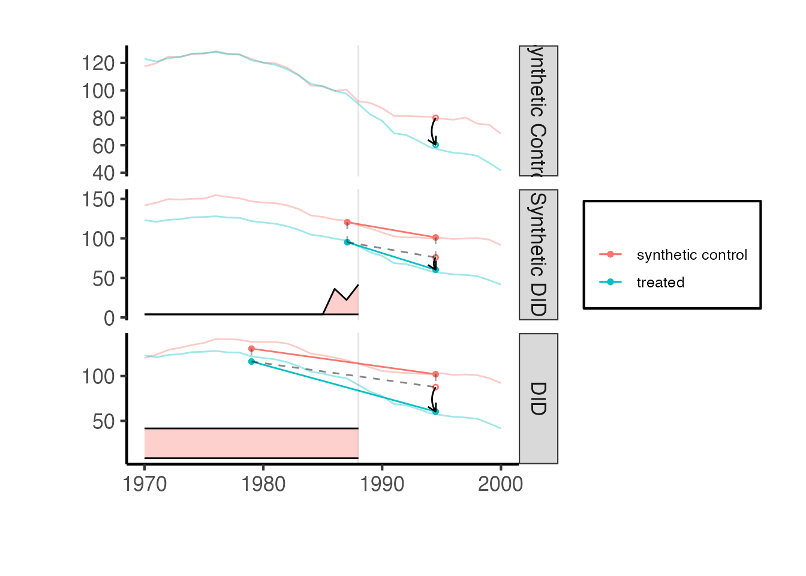
The plot shows the treated unit (California) in solid lines and the synthetic control in dashed lines. The vertical dashed line marks the treatment date. The gap between the solid and dashed lines in the post-treatment period is the estimated treatment effect.
# Individual estimate plots for closer inspection
synthdid::synthdid_plot(tau_sc, facet.vertical = FALSE) +
labs(title = "Synthetic Control: California vs. Synthetic California") +
ama_theme()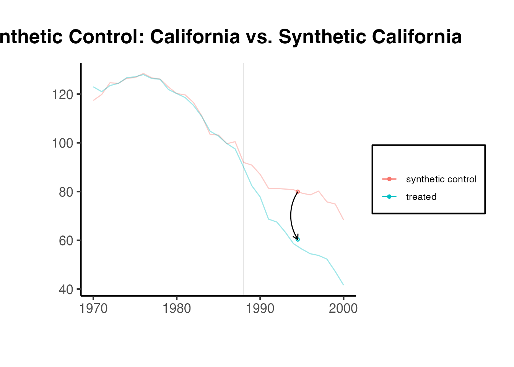
The synthdid::synthdid_units_plot() function shows which donor units contribute to the synthetic control and by how much:
synthdid::synthdid_units_plot(tau_sc) + ama_theme()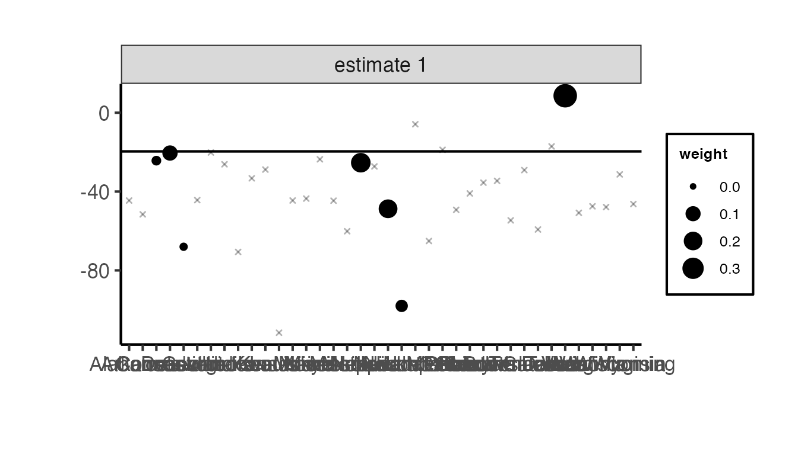
The causalverse package provides a suite of wrapper and extension functions around synthdid that offer additional estimators, staggered adoption support, standardized output formatting, and convenient visualization. This section covers each function in detail.
The causalverse package supports six estimation methods through a unified interface:
| Method | Description | Key Characteristics |
|---|---|---|
"did" |
Difference-in-Differences | Equal unit weights, uniform time weights |
"sc" |
Synthetic Control | Data-driven unit weights, uniform time weights |
"sc_ridge" |
SC with Ridge Penalty | Adds ridge regularization to SC unit weights |
"difp" |
De-meaned SC | Intercept shift + SC (Doudchenko & Imbens, 2016; Ferman & Pinto, 2021) |
"difp_ridge" |
De-meaned SC with Ridge | Ridge-penalized version of difp |
"synthdid" |
Synthetic DID | Data-driven unit AND time weights (Arkhangelsky et al., 2021) |
The ridge penalty variants add a regularization term to the weight optimization, where is set to with being the number of treated units and the number of post-treatment periods. This helps when the donor pool is small or the pre-treatment fit is imperfect.
The de-meaned (difp) methods implement the approach of Doudchenko and Imbens (2016), which allows for an intercept in the synthetic control model. Instead of requiring the synthetic control to match the treated unit’s level exactly, it only needs to match the demeaned trajectory. This relaxes the convex hull condition and can improve performance when the treated unit’s outcome level lies outside the range of donor units. Ferman and Pinto (2021) provide theoretical justification for this approach when pre-treatment fit is imperfect.
panel_estimate()
The panel_estimate() function runs multiple estimators on the same panel setup and returns both point estimates and standard errors. This allows for easy comparison across methods.
Function signature:
panel_estimate(
setup,
selected_estimators = setdiff(names(panel_estimators), "mc"),
mc_replications = 200,
seed = 1
)Arguments:
setup: A list from synthdid::panel.matrices() containing Y, N0, and T0.selected_estimators: Character vector of estimator names. Available options: "synthdid", "did", "sc", "difp", "mc", "sc_ridge", "difp_ridge". By default, all except "mc" (Matrix Completion) are used.mc_replications: Number of Monte Carlo replications for the "mc" estimator’s standard errors.seed: Random seed for reproducibility.Example: Comparing all estimators on California Proposition 99:
setup <- synthdid::panel.matrices(synthdid::california_prop99)
results <- causalverse::panel_estimate(
setup,
selected_estimators = c("sc", "sc_ridge", "difp", "difp_ridge", "did", "synthdid")
)
causalverse::process_panel_estimate(results)
#> Method Estimate SE
#> 1 SC -19.62 11.12
#> 2 SC_RIDGE -21.72 11.35
#> 3 DIFP -11.10 10.94
#> 4 DIFP_RIDGE -16.12 9.99
#> 5 DID -27.35 19.63
#> 6 SYNTHDID -15.60 10.28The output table shows each method’s point estimate and placebo-based standard error. Notice how the different methods can produce different estimates, reflecting their different assumptions about how the counterfactual is constructed.
process_panel_estimate()
The process_panel_estimate() function takes the output of panel_estimate() and formats it into a clean data frame with columns for Method, Estimate, and SE. It applies causalverse::nice_tab() for pretty printing.
# You can also run a subset and format
results_subset <- causalverse::panel_estimate(
setup,
selected_estimators = c("sc", "synthdid")
)
formatted <- causalverse::process_panel_estimate(results_subset)
formatted
#> Method Estimate SE
#> 1 SC -19.62 11.12
#> 2 SYNTHDID -15.60 9.53get_balanced_panel()
When working with staggered adoption designs, get_balanced_panel() extracts a balanced panel for a specific adoption cohort. It ensures that:
Function signature:
get_balanced_panel(
data,
adoption_cohort,
lags,
leads,
time_var,
unit_id_var,
treated_period_var,
filter_units = TRUE
)Arguments:
data: Long-format data frame.adoption_cohort: The cohort (treatment timing) of interest.lags: Number of pre-treatment periods to include.leads: Number of post-treatment periods to include (0 means only the treatment period itself).time_var: Name of the time column.unit_id_var: Name of the unit identifier column.treated_period_var: Name of the column indicating when each unit is first treated.filter_units: If TRUE (default), drops units that do not have complete data across all time periods in the window, ensuring a balanced panel via plm::make.pbalanced().Example:
df <- fixest::base_stagg |>
dplyr::mutate(treatvar = if_else(time_to_treatment >= 0, 1, 0)) |>
dplyr::mutate(treatvar = as.integer(if_else(year_treated > (5 + 2), 0, treatvar)))
balanced_df <- causalverse::get_balanced_panel(
data = df,
adoption_cohort = 5,
lags = 2,
leads = 3,
time_var = "year",
unit_id_var = "id",
treated_period_var = "year_treated"
)
cat("Balanced panel dimensions:", dim(balanced_df), "\n")
#> Balanced panel dimensions: 390 9
cat("Time range:", range(balanced_df$year), "\n")
#> Time range: 3 8
cat("Number of unique units:", length(unique(balanced_df$id)), "\n")
#> Number of unique units: 65synthdid_est()
The synthdid_est() function is the workhorse for single-cohort SC estimation within the causalverse framework. It:
synthdid::panel.matrices().synthdid_est_per().synthdid_se_jacknife().Function signature:
synthdid_est(
data,
adoption_cohort,
subgroup = NULL,
lags,
leads,
time_var,
unit_id_var,
treated_period_var,
treat_stat_var,
outcome_var,
seed = 1,
method = "synthdid"
)Key arguments:
subgroup: An optional vector of unit IDs. If provided, the treatment effect is computed only for the specified subset of treated units, while using all treated units for weight estimation.method: One of "did", "sc", "sc_ridge", "difp", "difp_ridge", or "synthdid".Return value: A list with components:
est: Named vector of per-period treatment effects and cumulative ATEs.se: Vector of jackknife (or placebo) standard errors corresponding to est.y_pred: Matrix of predicted (counterfactual) outcomes for treated units.y_obs: Matrix of observed outcomes for treated units.lambda.synth: Synthetic control time weights.Ntr: Number of treated units.Nco: Number of control units.Example with the SC method:
sc_result <- causalverse::synthdid_est(
data = balanced_df,
adoption_cohort = 5,
lags = 2,
leads = 3,
time_var = "year",
unit_id_var = "id",
treated_period_var = "year_treated",
treat_stat_var = "treatvar",
outcome_var = "y",
method = "sc"
)
# Per-period treatment effects
sc_result$est
#> [1] 0.0000000 0.0000000 -4.0551843 -3.3683479 -0.9169711 -3.5934783
#> [7] -4.0551843 -3.7117661 -2.7801678 -2.9834954
# Jackknife standard errors
sc_result$se
#> [1] 0.0000000 0.0000000 1.7137934 1.8092432 1.8892162 0.9258473 1.7137934
#> [8] 1.6518703 0.7901093 0.5864907
# Number of treated and control units
cat("Treated units:", sc_result$Ntr, "\n")
#> Treated units: 5
cat("Control units:", sc_result$Nco, "\n")
#> Control units: 60Example with SC Ridge:
sc_ridge_result <- causalverse::synthdid_est(
data = balanced_df,
adoption_cohort = 5,
lags = 2,
leads = 3,
time_var = "year",
unit_id_var = "id",
treated_period_var = "year_treated",
treat_stat_var = "treatvar",
outcome_var = "y",
method = "sc_ridge"
)
sc_ridge_result$est
#> [1] 0.000000 0.000000 -3.588171 -3.003013 -2.101026 -2.371376 -3.588171
#> [8] -3.295592 -2.897404 -2.765897Example with De-meaned SC (difp):
difp_result <- causalverse::synthdid_est(
data = balanced_df,
adoption_cohort = 5,
lags = 2,
leads = 3,
time_var = "year",
unit_id_var = "id",
treated_period_var = "year_treated",
treat_stat_var = "treatvar",
outcome_var = "y",
method = "difp"
)
difp_result$est
#> [1] 1.964540e-12 -1.964595e-12 -7.138007e+00 -3.875046e+00 -1.003842e+00
#> [6] -3.697728e+00 -7.138007e+00 -5.506526e+00 -4.005631e+00 -3.928656e+00Inference for synthetic control estimators is non-standard because:
The causalverse package provides two approaches to inference: placebo-based standard errors and jackknife standard errors.
synthdid_se_placebo()
The placebo method (Abadie, Diamond, and Hainmueller, 2010; Arkhangelsky et al., 2021) estimates standard errors by iteratively reassigning treatment to each control unit in the donor pool. For each placebo iteration:
This approach is particularly appropriate when there is only one treated unit.
Function signature:
synthdid_se_placebo(estimate, replications = 10000, seed = 1)Arguments:
estimate: A synthdid estimate object (from sc_estimate(), synthdid_estimate(), etc.).replications: Number of bootstrap replications. More replications give more stable SE estimates at the cost of computation time. Default is 10000.seed: Random seed.Requirements: The number of control units must exceed the number of treated units ().
Example:
# Create a synthdid estimate object from the balanced panel
panel_setup <- balanced_df |>
dplyr::mutate(treatvar = as.logical(treatvar)) |>
synthdid::panel.matrices(
unit = "id",
time = "year",
outcome = "y",
treatment = "treatvar"
)
estimate_obj <- synthdid::sc_estimate(panel_setup$Y, panel_setup$N0, panel_setup$T0)
placebo_se <- causalverse::synthdid_se_placebo(estimate_obj, replications = 500)
placebo_se
#> [1] 0.0000000 0.0000000 0.8692684 0.9162545 1.1098297 0.9870989 0.8692684
#> [8] 0.7375104 0.4730791 0.4600403The output is a vector of standard errors, one for each time period and cumulative ATE. These can be used to construct confidence intervals:
# Extract the overall ATT
att <- as.numeric(estimate_obj)
# Use the last element of the placebo SE as the overall SE
overall_se <- placebo_se[length(placebo_se)]
# 95% confidence interval
ci_lower <- att - 1.96 * overall_se
ci_upper <- att + 1.96 * overall_se
cat("ATT:", round(att, 3), "\n")
#> ATT: -2.983
cat("SE:", round(overall_se, 3), "\n")
#> SE: 0.46
cat("95% CI: [", round(ci_lower, 3), ",", round(ci_upper, 3), "]\n")
#> 95% CI: [ -3.885 , -2.082 ]synthdid_se_jacknife()
The jackknife method computes standard errors by sequentially leaving out one unit at a time and re-estimating the treatment effect. The variance of these leave-one-out estimates provides the standard error.
When there is only one treated unit, the jackknife cannot remove it without collapsing the estimation, so synthdid_se_jacknife() automatically falls back to the placebo method.
Function signature:
synthdid_se_jacknife(estimate, weights = attr(estimate, 'weights'), seed = 1)Arguments:
estimate: A synthdid estimate object.weights: Optional custom weights. If NULL, the usual jackknife with re-estimated weights is used (more conservative). If provided (default: the original estimated weights), a fixed-weights jackknife is computed, which is faster but may underestimate variability.seed: Random seed (used if falling back to placebo SE).Return value: A vector of standard errors, one for each period and cumulative ATE.
Example:
jackknife_se <- causalverse::synthdid_se_jacknife(estimate_obj)
jackknife_se
#> [1] 0.0000000 0.0000000 1.7137934 1.8092432 1.8892162 0.9258473 1.7137934
#> [8] 1.6518703 0.7901093 0.5864907The placebo and jackknife methods can produce different standard error estimates. In general:
synthdid_est_ate()
When using synthdid_est_ate() for staggered adoption (covered in Section 5), confidence intervals are automatically computed. The function aggregates cohort-level standard errors using the weighted average formula:
where is the standard error for cohort and is the number of treated units in cohort . The confidence interval is then:
where is the critical value from the standard normal distribution at the desired confidence level (default: 95%).
In many empirical settings, treatment is not adopted simultaneously by all treated units. Instead, different units adopt treatment at different times – a setting known as staggered adoption or staggered rollout. For example, states may pass similar legislation in different years, or firms may adopt a new technology at different times.
The standard SC setup (which assumes a single treatment date) does not directly apply to staggered adoption because:
Ben-Michael, Feller, and Rothstein (2022) formalize the synthetic control approach for staggered adoption. The key idea is to estimate cohort-specific treatment effects and then aggregate them into an overall average treatment effect.
synthdid_est_ate() Function
The synthdid_est_ate() function implements the staggered adoption SC estimator. It proceeds in three steps:
get_balanced_panel() and estimates the cohort-level ATT using synthdid_est().Function signature:
synthdid_est_ate(
data,
adoption_cohorts,
lags,
leads,
time_var,
unit_id_var,
treated_period_var,
treat_stat_var,
outcome_var,
placebo = FALSE,
pooled = FALSE,
subgroup = NULL,
conf_level = 0.95,
seed = 1,
method = "synthdid"
)Key arguments:
adoption_cohorts: A vector of cohort identifiers (e.g., 5:7 for units treated in periods 5, 6, and 7).placebo: If TRUE, runs a placebo analysis by randomly reassigning treatment to control units within each cohort.pooled: If TRUE, pools all treated units within a cohort into a single average treated unit.subgroup: Optional vector of unit IDs for subgroup analysis.conf_level: Confidence level for interval estimation (default: 0.95).method: Any of the six available estimation methods.Return value: A list containing:
TE_mean, SE_mean: Simple average ATT and SE across cohorts per period.TE_mean_w, SE_mean_w: Weighted average ATT and SE (weighted by number of treated units).TE_mean_lower, TE_mean_upper: Confidence interval bounds (simple average).TE_mean_w_lower, TE_mean_w_upper: Confidence interval bounds (weighted average).Ntr, Nco: Vectors of treated and control unit counts per cohort.TE, SE: Matrices of cohort-level treatment effects and standard errors.y_obs, y_pred: Matrices of observed and predicted outcomes.time: Vector of relative time periods.col_names: Column names for TE and SE matrices.Example using fixest::base_stagg data:
df <- fixest::base_stagg |>
dplyr::mutate(treatvar = if_else(time_to_treatment >= 0, 1, 0)) |>
dplyr::mutate(treatvar = as.integer(if_else(year_treated > (5 + 2), 0, treatvar)))
est_sc <- causalverse::synthdid_est_ate(
data = df,
adoption_cohorts = 5:7,
lags = 2,
leads = 2,
time_var = "year",
unit_id_var = "id",
treated_period_var = "year_treated",
treat_stat_var = "treatvar",
outcome_var = "y",
method = "sc"
)
#> Adoption Cohort: 5
#> Treated units: 5 Control units: 65
#> Adoption Cohort: 6
#> Treated units: 5 Control units: 60
#> Adoption Cohort: 7
#> Treated units: 5 Control units: 55Examining the results:
# Weighted average ATT per period
data.frame(
Period = names(est_sc$TE_mean_w),
ATE = round(est_sc$TE_mean_w, 4),
SE = round(est_sc$SE_mean_w, 4),
Lower = round(est_sc$TE_mean_w_lower, 4),
Upper = round(est_sc$TE_mean_w_upper, 4)
) |>
causalverse::nice_tab()
#> Period ATE SE Lower Upper
#> 1 -2 0.00 0.00 0.00 0.00
#> 2 -1 0.00 0.00 0.00 0.00
#> 3 0 -6.67 1.03 -8.68 -4.66
#> 4 1 -4.16 1.42 -6.95 -1.37
#> 5 2 -4.07 0.87 -5.78 -2.35
#> 6 cumul.0 -6.67 1.03 -8.68 -4.66
#> 7 cumul.1 -5.41 0.85 -7.08 -3.75
#> 8 cumul.2 -4.96 0.58 -6.10 -3.83
# Cohort-level treatment effects
cat("Cohort-level ATTs:\n")
#> Cohort-level ATTs:
print(round(est_sc$TE, 4))
#> -2 -1 0 1 2 cumul.0 cumul.1 cumul.2
#> 5 0 0 -4.0520 -3.3614 -0.9315 -4.0520 -3.7067 -2.7816
#> 6 0 0 -6.5429 -5.7201 -6.0306 -6.5429 -6.1315 -6.0979
#> 7 0 0 -9.4059 -3.3998 -5.2348 -9.4059 -6.4029 -6.0135
cat("\nCohort-level SEs:\n")
#>
#> Cohort-level SEs:
print(round(est_sc$SE, 4))
#> -2 -1 0 1 2 cumul.0 cumul.1 cumul.2
#> 5 0 0 1.7053 1.8101 1.8901 1.7053 1.6477 0.7874
#> 6 0 0 1.5800 1.5308 1.3300 1.5800 1.5138 1.0799
#> 7 0 0 2.0150 3.5490 1.2437 2.0150 1.2287 1.0995
cat("\nTreated units per cohort:", est_sc$Ntr, "\n")
#>
#> Treated units per cohort: 5 5 5
cat("Control units per cohort:", est_sc$Nco, "\n")
#> Control units per cohort: 65 60 55synthdid_plot_ate()
The synthdid_plot_ate() function creates a ggplot visualization of the ATE estimates over relative time, with optional confidence intervals.
Function signature:
synthdid_plot_ate(
est,
show_CI = TRUE,
title = "",
xlab = "Relative Time Period",
ylab = "ATE",
y_intercept = 0,
theme = causalverse::ama_theme(),
fill_color = "lightgrey"
)Arguments:
est: Output from synthdid_est_ate().show_CI: If TRUE, displays the confidence interval as a ribbon.title: Plot title.fill_color: Color for the confidence interval ribbon.
causalverse::synthdid_plot_ate(
est_sc,
title = "Synthetic Control with Staggered Adoption",
show_CI = TRUE
)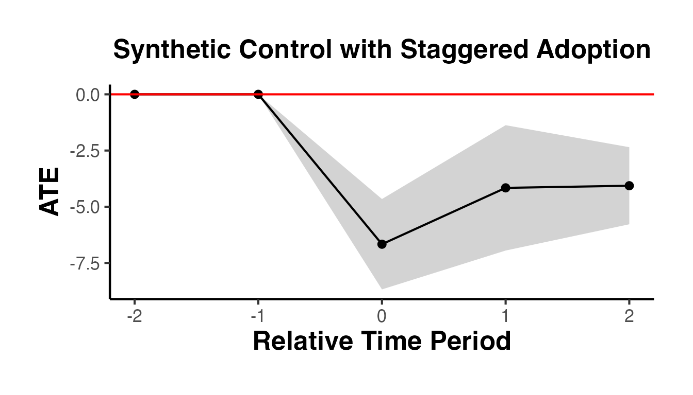
The plot shows the weighted average ATT by relative time period. The confidence interval ribbon gives the range of plausible values. The red horizontal line at zero serves as a reference – if the confidence interval excludes zero, the effect is statistically significant at the chosen confidence level.
A useful robustness check is to estimate the staggered SC using multiple methods and compare results. The following code runs all SC-related methods and plots them side by side.
methods <- c("sc", "sc_ridge", "difp", "difp_ridge", "synthdid")
estimates_staggered <- lapply(methods, function(m) {
causalverse::synthdid_est_ate(
data = df,
adoption_cohorts = 5:7,
lags = 2,
leads = 2,
time_var = "year",
unit_id_var = "id",
treated_period_var = "year_treated",
treat_stat_var = "treatvar",
outcome_var = "y",
method = m
)
})
#> Adoption Cohort: 5
#> Treated units: 5 Control units: 65
#> Adoption Cohort: 6
#> Treated units: 5 Control units: 60
#> Adoption Cohort: 7
#> Treated units: 5 Control units: 55
#> Adoption Cohort: 5
#> Treated units: 5 Control units: 65
#> Adoption Cohort: 6
#> Treated units: 5 Control units: 60
#> Adoption Cohort: 7
#> Treated units: 5 Control units: 55
#> Adoption Cohort: 5
#> Treated units: 5 Control units: 65
#> Adoption Cohort: 6
#> Treated units: 5 Control units: 60
#> Adoption Cohort: 7
#> Treated units: 5 Control units: 55
#> Adoption Cohort: 5
#> Treated units: 5 Control units: 65
#> Adoption Cohort: 6
#> Treated units: 5 Control units: 60
#> Adoption Cohort: 7
#> Treated units: 5 Control units: 55
#> Adoption Cohort: 5
#> Treated units: 5 Control units: 65
#> Adoption Cohort: 6
#> Treated units: 5 Control units: 60
#> Adoption Cohort: 7
#> Treated units: 5 Control units: 55
plots <- lapply(seq_along(estimates_staggered), function(i) {
causalverse::synthdid_plot_ate(
estimates_staggered[[i]],
title = toupper(methods[i]),
theme = causalverse::ama_theme(base_size = 6)
)
})
gridExtra::grid.arrange(grobs = plots, ncol = 2)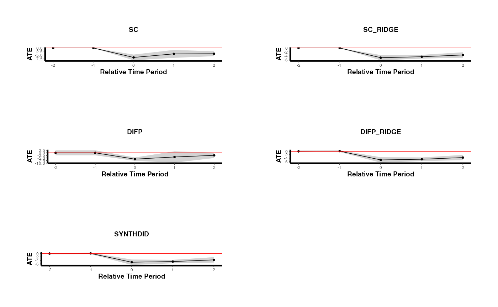
The placebo argument in synthdid_est_ate() allows you to run a falsification test. In the placebo analysis, treatment is randomly reassigned to control units (maintaining the same number of treated units per cohort), and the estimator is applied. If the true treatment effect is genuine, the placebo distribution should be centered near zero.
# Run placebo analysis (slow -- uses random reassignment)
est_placebo <- causalverse::synthdid_est_ate(
data = df,
adoption_cohorts = 5:7,
lags = 2,
leads = 2,
time_var = "year",
unit_id_var = "id",
treated_period_var = "year_treated",
treat_stat_var = "treatvar",
outcome_var = "y",
method = "sc",
placebo = TRUE,
seed = 42
)
#> Adoption Cohort: 5
#> [1] "Running Placebo Analysis"
#> Treated units: 5 Control units: 60
#> Adoption Cohort: 6
#> [1] "Running Placebo Analysis"
#> Treated units: 5 Control units: 55
#> Adoption Cohort: 7
#> [1] "Running Placebo Analysis"
#> Treated units: 5 Control units: 50
causalverse::synthdid_plot_ate(
est_placebo,
title = "Placebo Test: SC with Staggered Adoption"
)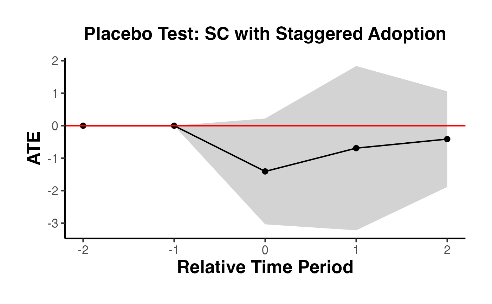
synthdid_est_per()
While the overall ATT summarizes the treatment effect as a single number, researchers often want to understand how the effect evolves over time. The synthdid_est_per() function decomposes the overall treatment effect into period-specific effects and cumulative average treatment effects.
Function signature:
synthdid_est_per(Y, N0, T0, weights)Arguments:
Y: The outcome matrix (from panel.matrices()).N0: Number of control units.T0: Number of pre-treatment periods.weights: The weight object from a synthdid estimate (obtained via attr(estimate, 'weights')).Return value: A list with:
est: A vector of treatment effects for each time period (including pre-treatment periods, which serve as a pre-trend check) plus cumulative ATEs for post-treatment periods.y_obs: Matrix of observed outcomes for treated units (weighted by lambda).y_pred: Matrix of predicted (synthetic) outcomes for treated units.lambda.synth: The synthetic control time weights.Ntr: Number of treated units.Nco: Number of control units.Example using California Proposition 99:
setup <- synthdid::panel.matrices(synthdid::california_prop99)
# Get an SC estimate
sc_est <- synthdid::sc_estimate(setup$Y, setup$N0, setup$T0)
# Extract per-period effects
per_period <- causalverse::synthdid_est_per(
Y = setup$Y,
N0 = setup$N0,
T0 = setup$T0,
weights = attr(sc_est, 'weights')
)
# All treatment effects (pre-treatment + post-treatment + cumulative)
per_period$est
#> [1] 0.000000 0.000000 0.000000 0.000000 0.000000 0.000000
#> [7] 0.000000 0.000000 0.000000 0.000000 0.000000 0.000000
#> [13] 0.000000 0.000000 0.000000 0.000000 0.000000 0.000000
#> [19] 0.000000 -8.458861 -9.244346 -12.666437 -13.791019 -17.634190
#> [25] -22.171001 -22.971458 -24.138390 -26.395828 -23.474552 -27.696370
#> [31] -26.793510 -8.458861 -8.851603 -10.123214 -11.040166 -12.358970
#> [37] -13.994309 -15.276759 -16.384463 -17.496837 -18.094608 -18.967496
#> [43] -19.619663The output vector from synthdid_est_per() has three parts:
Pre-treatment periods (indices 1 through ): These should ideally be close to zero if the synthetic control provides a good pre-treatment fit. Large pre-treatment effects indicate poor fit and suggest the SC estimate may be unreliable.
Post-treatment periods (indices through ): These are the period-specific treatment effects, showing how the effect evolves over time after treatment.
Cumulative ATEs (labeled cumul.0, cumul.1, etc.): These are the running averages of post-treatment effects. cumul.0 is the effect in the first post-treatment period, cumul.1 is the average of the first two post-treatment effects, and so on.
# Number of treated and control units
cat("Treated units:", per_period$Ntr, "\n")
#> Treated units: 1
cat("Control units:", per_period$Nco, "\n")
#> Control units: 38
# Time period names
T0 <- setup$T0
T1 <- ncol(setup$Y) - T0
cat("\nPre-treatment periods:", T0, "\n")
#>
#> Pre-treatment periods: 19
cat("Post-treatment periods:", T1, "\n")
#> Post-treatment periods: 12
# Pre-treatment effects (should be near zero)
cat("\nPre-treatment effects (first 5):\n")
#>
#> Pre-treatment effects (first 5):
print(round(per_period$est[1:min(5, T0)], 3))
#> [1] 0 0 0 0 0
# Post-treatment effects
cat("\nPost-treatment effects:\n")
#>
#> Post-treatment effects:
print(round(per_period$est[(T0 + 1):(T0 + T1)], 3))
#> [1] -8.459 -9.244 -12.666 -13.791 -17.634 -22.171 -22.971 -24.138 -26.396
#> [10] -23.475 -27.696 -26.794You can create a gap plot (the difference between treated and synthetic control over time) to visualize the per-period effects:
T_total <- T0 + T1
years <- as.numeric(colnames(setup$Y))
gap_df <- data.frame(
Year = years,
Effect = per_period$est[1:T_total],
Period = c(rep("Pre-treatment", T0), rep("Post-treatment", T1))
)
ggplot(gap_df, aes(x = Year, y = Effect, color = Period)) +
geom_line(linewidth = 0.8) +
geom_point(size = 2) +
geom_hline(yintercept = 0, linetype = "dashed", color = "gray50") +
geom_vline(xintercept = years[T0] + 0.5, linetype = "dashed", color = "red") +
scale_color_manual(values = c("Pre-treatment" = "steelblue", "Post-treatment" = "darkred")) +
labs(
title = "Per-Period Treatment Effects: California Proposition 99",
x = "Year",
y = "Gap (Treated - Synthetic)",
color = NULL
) +
ama_theme()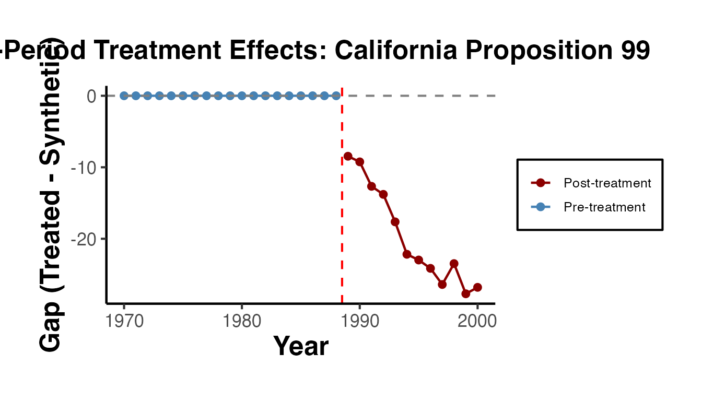
Synth Package
The original Synth package (Abadie, Diamond, and Hainmueller, 2011) provides the foundational implementation of the synthetic control method. While the synthdid package offers more modern estimators, the Synth package remains widely used and offers several features not available elsewhere, including explicit predictor matching and rich diagnostic tools.
dataprep() Function
The dataprep() function organizes the data into the format required by synth(). It specifies predictors, the dependent variable, the treatment and control identifiers, and the time windows for optimization and plotting.
library(Synth)
# Create simulated panel data for the Synth package examples
set.seed(42)
n_units <- 10
n_years <- 31
years <- 1970:2000
state_ids <- 1:n_units
state_names <- paste0("State_", state_ids)
panel_data <- expand.grid(year = years, state_id = state_ids)
panel_data$state_name <- state_names[panel_data$state_id]
# Generate covariates
panel_data$gdp_per_capita <- rnorm(nrow(panel_data), mean = 30000, sd = 5000)
panel_data$population_density <- rnorm(nrow(panel_data), mean = 100, sd = 30)
panel_data$unemployment_rate <- runif(nrow(panel_data), min = 3, max = 10)
# Generate outcome with unit and time effects
unit_fe <- rnorm(n_units, mean = 100, sd = 15)[panel_data$state_id]
time_fe <- seq(-5, 5, length.out = n_years)[match(panel_data$year, years)]
panel_data$cigarette_sales <- unit_fe + time_fe +
0.001 * panel_data$gdp_per_capita - 0.1 * panel_data$unemployment_rate +
rnorm(nrow(panel_data), sd = 3)
# Add treatment effect for state 3 after 1988
panel_data$cigarette_sales[panel_data$state_id == 3 & panel_data$year > 1988] <-
panel_data$cigarette_sales[panel_data$state_id == 3 & panel_data$year > 1988] - 20
controls.identifier <- setdiff(state_ids, 3)
dataprep_out <- dataprep(
foo = panel_data,
predictors = c("gdp_per_capita", "population_density", "unemployment_rate"),
predictors.op = "mean",
dependent = "cigarette_sales",
unit.variable = "state_id",
time.variable = "year",
treatment.identifier = 3,
controls.identifier = controls.identifier,
time.predictors.prior = 1970:1988,
time.optimize.ssr = 1970:1988,
time.plot = 1970:2000,
unit.names.variable = "state_name",
special.predictors = list(
list("cigarette_sales", 1975, "mean"),
list("cigarette_sales", 1980, "mean"),
list("cigarette_sales", 1988, "mean")
)
)Key arguments:
predictors: Vector of covariate names to match on.predictors.op: Aggregation operator for predictors (e.g., "mean").special.predictors: Allows matching on the outcome variable at specific time points, which is crucial for good pre-treatment fit.time.optimize.ssr: The pre-treatment period over which the sum of squared residuals is minimized.time.plot: The full time window for visualization.synth() Function
The synth() function solves the nested optimization problem to find the optimal weights:
synth_out <- synth(dataprep_out, method = "BFGS")
# View the synthetic control weights
synth_out$solution.w # Unit weights (omega)
synth_out$solution.v # Predictor importance weights (V matrix)
# Compare predictor values: treated vs. synthetic
synth.tables <- synth.tab(synth_out, dataprep_out)
print(synth.tables$tab.pred) # Predictor balance table
print(synth.tables$tab.w) # Unit weights
print(synth.tables$tab.v) # V weightsThe Synth package provides two key diagnostic plots:
# Path plot: Treated vs. Synthetic Control trajectories
path.plot(
synth.res = synth_out,
dataprep.res = dataprep_out,
Ylab = "Per-capita Cigarette Sales (packs)",
Xlab = "Year",
Legend = c("Treated State", "Synthetic Control"),
Legend.position = "bottomleft"
)
abline(v = 1988, lty = 2, col = "red")
# Gaps plot: Difference between treated and synthetic
gaps.plot(
synth.res = synth_out,
dataprep.res = dataprep_out,
Ylab = "Gap in Cigarette Sales",
Xlab = "Year"
)
abline(v = 1988, lty = 2, col = "red")
abline(h = 0, lty = 2, col = "gray")Synth
A standard validation exercise with the Synth package is to run in-space placebo tests: apply the synthetic control method to each control unit as if it were the treated unit, and compare the resulting gaps to the gap for the actual treated unit.
# Compute the treated unit's gaps first
gaps <- dataprep_out$Y1plot - (dataprep_out$Y0plot %*% synth_out$solution.w)
# In-space placebo test: iterate over all control units
store <- matrix(NA, length(1970:2000), length(controls.identifier))
colnames(store) <- controls.identifier
for (j in seq_along(controls.identifier)) {
# Swap treatment identifier
dataprep_placebo <- dataprep(
foo = panel_data,
predictors = c("gdp_per_capita", "population_density", "unemployment_rate"),
predictors.op = "mean",
dependent = "cigarette_sales",
unit.variable = "state_id",
time.variable = "year",
treatment.identifier = controls.identifier[j],
controls.identifier = setdiff(c(3, controls.identifier), controls.identifier[j]),
time.predictors.prior = 1970:1988,
time.optimize.ssr = 1970:1988,
time.plot = 1970:2000
)
synth_placebo <- tryCatch(
synth(dataprep_placebo, method = "BFGS"),
error = function(e) NULL
)
if (!is.null(synth_placebo)) {
store[, j] <- dataprep_placebo$Y1plot - (dataprep_placebo$Y0plot %*% synth_placebo$solution.w)
}
}
# Plot all gaps together
matplot(1970:2000, store, type = "l", col = "grey", lty = 1,
ylab = "Gap", xlab = "Year", main = "In-Space Placebo Test")
# Add the actual treated unit's gap
lines(1970:2000, gaps, col = "black", lwd = 2)
abline(v = 1988, lty = 2, col = "red")augsynth
The standard SC estimator can have bias when the pre-treatment fit is imperfect – that is, when the synthetic control does not perfectly match the treated unit’s pre-treatment outcomes. Ben-Michael, Feller, and Rothstein (2021) propose the Augmented Synthetic Control Method (ASCM), which combines the SC estimator with an outcome model to “augment” the SC estimate and reduce this bias.
The idea is analogous to doubly robust estimation in the cross-sectional setting: the ASCM estimator is consistent if either the SC weights provide a good fit or the outcome model is correctly specified.
The ASCM estimator can be written as:
where is the standard SC estimate, is an outcome model (e.g., ridge regression), and the correction term adjusts for any residual bias in the SC fit.
augsynth Package
The augsynth package provides a simple interface for the ASCM:
library(augsynth)
# Create simulated panel data for augsynth examples
set.seed(123)
n_units_aug <- 15
years_aug <- 1970:2000
aug_panel <- expand.grid(year = years_aug, state_id = 1:n_units_aug)
# Unit and time effects
unit_effects <- rnorm(n_units_aug, mean = 100, sd = 10)
time_effects <- seq(-3, 3, length.out = length(years_aug))
aug_panel$gdp_per_capita <- rnorm(nrow(aug_panel), mean = 30000, sd = 5000)
aug_panel$population_density <- rnorm(nrow(aug_panel), mean = 100, sd = 30)
aug_panel$cigarette_sales <- unit_effects[aug_panel$state_id] +
time_effects[match(aug_panel$year, years_aug)] +
0.0005 * aug_panel$gdp_per_capita +
rnorm(nrow(aug_panel), sd = 2)
# State 1 is treated after 1988
aug_panel$treated <- as.integer(aug_panel$state_id == 1 & aug_panel$year > 1988)
aug_panel$cigarette_sales[aug_panel$treated == 1] <-
aug_panel$cigarette_sales[aug_panel$treated == 1] - 15
# Basic augmented synthetic control
asyn <- augsynth(
cigarette_sales ~ treated,
unit = state_id,
time = year,
data = aug_panel,
progfunc = "ridge", # Outcome model: ridge regression
scm = TRUE # Use SC weights
)
# Summary with p-values
summary(asyn)
# Plot treated vs. synthetic
plot(asyn)The Ridge ASCM uses ridge regression as the outcome model. The key tuning parameter is the ridge penalty , which controls the bias-variance tradeoff in the augmentation:
The augsynth package supports several outcome models:
# No augmentation (pure SC)
asyn_none <- augsynth(
cigarette_sales ~ treated,
unit = state_id, time = year, data = aug_panel,
progfunc = "none", scm = TRUE
)
# GSYN (Generalized Synthetic Control)
asyn_gsyn <- augsynth(
cigarette_sales ~ treated,
unit = state_id, time = year, data = aug_panel,
progfunc = "gsyn", scm = TRUE
)
# Matrix Completion
asyn_mc <- augsynth(
cigarette_sales ~ treated,
unit = state_id, time = year, data = aug_panel,
progfunc = "mc", scm = TRUE
)augsynth
The augsynth package also supports staggered adoption through the multisynth() function:
# Create staggered adoption data for multisynth
set.seed(456)
n_units_stag <- 20
years_stag <- 1980:2000
stag_panel <- expand.grid(year = years_stag, state_id = 1:n_units_stag)
unit_fe_stag <- rnorm(n_units_stag, mean = 80, sd = 10)
time_fe_stag <- seq(-2, 2, length.out = length(years_stag))
stag_panel$cigarette_sales <- unit_fe_stag[stag_panel$state_id] +
time_fe_stag[match(stag_panel$year, years_stag)] +
rnorm(nrow(stag_panel), sd = 2)
# Staggered treatment: units 1-3 treated in 1990, units 4-6 treated in 1993
stag_panel$treated <- 0L
stag_panel$treated[stag_panel$state_id %in% 1:3 & stag_panel$year >= 1990] <- 1L
stag_panel$treated[stag_panel$state_id %in% 4:6 & stag_panel$year >= 1993] <- 1L
# Add treatment effect
stag_panel$cigarette_sales[stag_panel$treated == 1] <-
stag_panel$cigarette_sales[stag_panel$treated == 1] - 10
# Staggered adoption with multiple treatment times
msyn <- multisynth(
cigarette_sales ~ treated,
unit = state_id,
time = year,
data = stag_panel,
n_leads = 7,
n_lags = 5
)
summary(msyn)
plot(msyn)
# Plot individual cohort effects
plot(msyn, levels = "Average")gsynth
The Generalized Synthetic Control (GSC) method (Xu, 2017) extends the SC framework by combining interactive fixed effects (IFE) models with the synthetic control approach. The key advantage is that it can handle multiple treated units with staggered adoption in a unified framework, while also modeling unobserved time-varying confounders through a factor structure.
The GSC method assumes the following factor model for potential outcomes:
where are unit fixed effects, are time fixed effects, are observed covariates, are unit-specific factor loadings, are common time-varying factors, and are idiosyncratic errors.
The GSC method estimates the factor structure from the control group data, then uses it to predict the counterfactual for treated units.
gsynth Package
library(gsynth)
#> ## Since v.1.3.0, *gsynth* is a wrapper of the *fect* package.
#> ## Comments and suggestions -> yiqingxu@stanford.edu.
# Create simulated panel data for gsynth examples
set.seed(789)
n_units_g <- 20
years_g <- 1980:2005
gsynth_panel <- expand.grid(year = years_g, state_id = 1:n_units_g)
# Covariates
gsynth_panel$gdp_per_capita <- rnorm(nrow(gsynth_panel), mean = 30000, sd = 5000)
gsynth_panel$unemployment_rate <- runif(nrow(gsynth_panel), min = 3, max = 10)
gsynth_panel$x1 <- rnorm(nrow(gsynth_panel))
gsynth_panel$x2 <- rnorm(nrow(gsynth_panel))
# Outcome with factor structure
unit_fe_g <- rnorm(n_units_g, sd = 10)
time_fe_g <- rnorm(length(years_g), sd = 2)
factor_loading <- rnorm(n_units_g)
factor_time <- cumsum(rnorm(length(years_g), sd = 0.3))
gsynth_panel$cigarette_sales <- unit_fe_g[gsynth_panel$state_id] +
time_fe_g[match(gsynth_panel$year, years_g)] +
factor_loading[gsynth_panel$state_id] * factor_time[match(gsynth_panel$year, years_g)] +
0.0005 * gsynth_panel$gdp_per_capita -
0.5 * gsynth_panel$unemployment_rate +
rnorm(nrow(gsynth_panel), sd = 2)
# Treatment: units 1-3 treated from 1995 onwards
gsynth_panel$treated <- as.integer(
gsynth_panel$state_id %in% 1:3 & gsynth_panel$year >= 1995
)
gsynth_panel$cigarette_sales[gsynth_panel$treated == 1] <-
gsynth_panel$cigarette_sales[gsynth_panel$treated == 1] - 10
# Also create y and unit_id aliases for later chunks
gsynth_panel$y <- gsynth_panel$cigarette_sales
gsynth_panel$unit_id <- gsynth_panel$state_id
# Basic generalized synthetic control
out <- gsynth(
cigarette_sales ~ treated + gdp_per_capita + unemployment_rate,
data = gsynth_panel,
index = c("state_id", "year"),
force = "two-way", # Unit and time fixed effects
CV = TRUE, # Cross-validate number of factors
r = c(0, 5), # Range of factors to consider
se = TRUE, # Compute standard errors
nboots = 500, # Number of bootstrap replications
inference = "parametric",
parallel = FALSE
)
#> Cross-validating ...
#> Criterion: Mean Squared Prediction Error
#> Interactive fixed effects model...
#> Cross-validating ...
#> r = 0; sigma2 = 4.21875; IC = 2.04591; PC = 3.79879; MSPE = 3.57363
#> *
#> r = 1; sigma2 = 3.85802; IC = 2.50778; PC = 10.24790; MSPE = 4.05444
#> r = 2; sigma2 = 3.47047; IC = 2.92560; PC = 15.32763; MSPE = 4.61306
#> r = 3; sigma2 = 3.12384; IC = 3.31650; PC = 19.30981; MSPE = 4.98539
#> r = 4; sigma2 = 2.81496; IC = 3.68095; PC = 22.38121; MSPE = 5.43984
#> r = 5; sigma2 = 2.52142; IC = 4.01182; PC = 24.52008; MSPE = 4.64542
#>
#> r* = 0
#>
#> Parametric Bootstrap
#> Simulating errors ...
#> Can't calculate the F statistic because of insufficient treated units.
# Print summary
print(out)
#> Call:
#> gsynth(formula = cigarette_sales ~ treated + gdp_per_capita +
#> unemployment_rate, data = gsynth_panel, index = c("state_id",
#> "year"), force = "two-way", r = c(0, 5), CV = TRUE, se = TRUE,
#> nboots = 500, inference = "parametric", parallel = FALSE,
#> vartype = "parametric")
#>
#> Average Treatment Effect on the Treated:
#> ATT.avg S.E. CI.lower CI.upper p.value
#> [1,] -10.33 0.4405 -11.19 -9.463 0
#>
#> ~ by Period (including Pre-treatment Periods):
#> ATT S.E. CI.lower CI.upper p.value count
#> -14 1.0424 1.6878 -2.2655 4.3504 5.368e-01 3
#> -13 0.0457 1.3847 -2.6682 2.7596 9.737e-01 3
#> -12 0.4543 0.8903 -1.2907 2.1993 6.098e-01 3
#> -11 0.5946 1.4256 -2.1995 3.3886 6.766e-01 3
#> -10 -0.3104 1.1988 -2.6600 2.0392 7.957e-01 3
#> -9 0.5787 1.2456 -1.8627 3.0201 6.422e-01 3
#> -8 0.6779 1.4403 -2.1451 3.5008 6.379e-01 3
#> -7 -1.7402 1.2285 -4.1480 0.6676 1.566e-01 3
#> -6 -0.5554 1.4483 -3.3940 2.2833 7.014e-01 3
#> -5 -0.2574 0.5160 -1.2687 0.7539 6.179e-01 3
#> -4 -1.1888 1.2691 -3.6763 1.2987 3.489e-01 3
#> -3 1.0271 1.6853 -2.2759 4.3302 5.422e-01 3
#> -2 1.7773 1.3536 -0.8758 4.4303 1.892e-01 3
#> -1 -1.1948 1.5334 -4.2003 1.8107 4.359e-01 3
#> 0 -0.9510 0.9203 -2.7547 0.8526 3.014e-01 3
#> 1 -8.8084 1.4131 -11.5780 -6.0389 4.559e-10 3
#> 2 -10.2748 1.2660 -12.7561 -7.7934 4.441e-16 3
#> 3 -11.1701 1.0812 -13.2893 -9.0509 0.000e+00 3
#> 4 -11.2680 1.6970 -14.5941 -7.9418 3.142e-11 3
#> 5 -12.0585 1.1613 -14.3346 -9.7823 0.000e+00 3
#> 6 -11.0190 1.3288 -13.6233 -8.4146 0.000e+00 3
#> 7 -8.3095 1.5060 -11.2612 -5.3579 3.435e-08 3
#> 8 -10.2716 1.0484 -12.3264 -8.2167 0.000e+00 3
#> 9 -10.7812 1.1645 -13.0636 -8.4988 0.000e+00 3
#> 10 -10.6672 1.3986 -13.4084 -7.9260 2.398e-14 3
#> 11 -8.9626 1.5828 -12.0649 -5.8603 1.493e-08 3
#>
#> Coefficients for the Covariates:
#> Coef S.E. CI.lower CI.upper p.value
#> gdp_per_capita 0.000528 2.026e-05 0.0004883 0.0005677 0.000e+00
#> unemployment_rate -0.394875 5.113e-02 -0.4950791 -0.2946701 1.132e-14
# Average treatment effect
out$att
#> [1] 1.04242441 0.04570285 0.45431927 0.59455705 -0.31039086
#> [6] 0.57869226 0.67785419 -1.74019575 -0.55538232 -0.25737605
#> [11] -1.18878815 1.02713705 1.77728095 -1.19480329 -0.95103160
#> [16] -8.80843636 -10.27476860 -11.17013028 -11.26796840 -12.05846921
#> [21] -11.01896793 -8.30952062 -10.27157041 -10.78118919 -10.66722676
#> [26] -8.96263911
# Number of factors selected by cross-validation
out$r.cv
#> r
#> 0
# Treated vs. counterfactual plot
plot(out, type = "gap") # Gap plot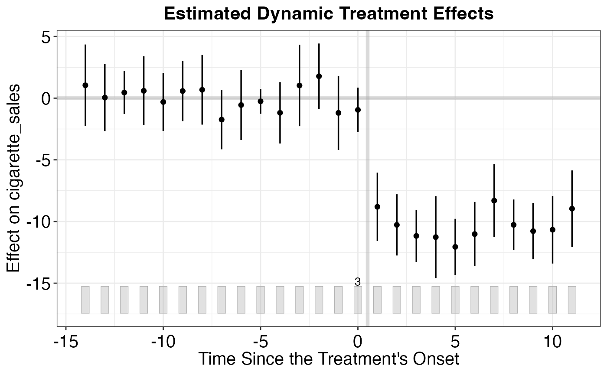
plot(out, type = "ct") # Counterfactual plot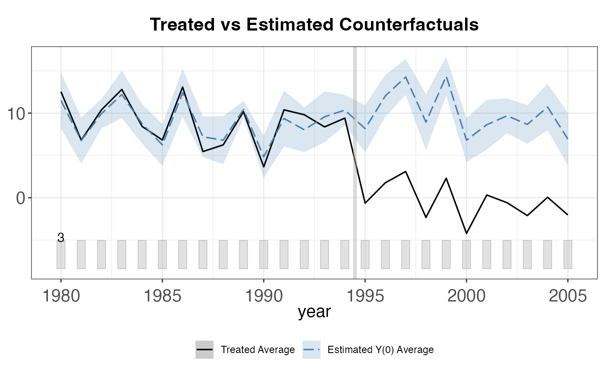
plot(out, type = "raw") # Raw data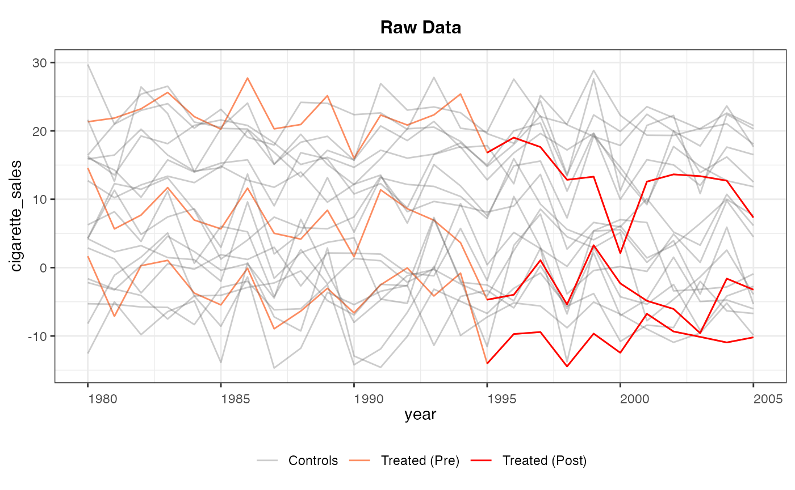
One of the main advantages of gsynth is its natural handling of multiple treated units:
# Works seamlessly with multiple treated units
# The factor structure is estimated from the control group
# and used to impute counterfactuals for ALL treated units
# Create multi-treatment data with staggered adoption
set.seed(101)
n_units_mt <- 30
years_mt <- 1980:2005
panel_data_multi_treat <- expand.grid(time = years_mt, unit_id = 1:n_units_mt)
panel_data_multi_treat$x1 <- rnorm(nrow(panel_data_multi_treat))
panel_data_multi_treat$x2 <- rnorm(nrow(panel_data_multi_treat))
ufe <- rnorm(n_units_mt, sd = 8)
tfe <- rnorm(length(years_mt), sd = 1.5)
panel_data_multi_treat$y <- ufe[panel_data_multi_treat$unit_id] +
tfe[match(panel_data_multi_treat$time, years_mt)] +
0.5 * panel_data_multi_treat$x1 + 0.3 * panel_data_multi_treat$x2 +
rnorm(nrow(panel_data_multi_treat), sd = 2)
# Units 1-5 treated from 1995, units 6-8 treated from 1998
panel_data_multi_treat$treated <- as.integer(
(panel_data_multi_treat$unit_id %in% 1:5 & panel_data_multi_treat$time >= 1995) |
(panel_data_multi_treat$unit_id %in% 6:8 & panel_data_multi_treat$time >= 1998)
)
panel_data_multi_treat$y[panel_data_multi_treat$treated == 1] <-
panel_data_multi_treat$y[panel_data_multi_treat$treated == 1] - 8
out_multi <- gsynth(
y ~ treated + x1 + x2,
data = panel_data_multi_treat,
index = c("unit_id", "time"),
force = "two-way",
CV = TRUE,
r = c(0, 5),
se = TRUE,
nboots = 500,
inference = "parametric"
)
#> Parallel computing ...
#> Cross-validating ...
#> Criterion: Mean Squared Prediction Error
#> Interactive fixed effects model...
#> Cross-validating ...
#> r = 0; sigma2 = 4.12929; IC = 1.96200; PC = 3.77556; MSPE = 4.61519
#> *
#> r = 1; sigma2 = 3.88889; IC = 2.40151; PC = 8.33922; MSPE = 4.65804
#> r = 2; sigma2 = 3.65241; IC = 2.81607; PC = 12.33747; MSPE = 5.02298
#> r = 3; sigma2 = 3.39601; IC = 3.19838; PC = 15.67235; MSPE = 5.39973
#> r = 4; sigma2 = 3.15563; IC = 3.55786; PC = 18.47764; MSPE = 5.93709
#> r = 5; sigma2 = 2.93700; IC = 3.89676; PC = 20.85113; MSPE = 8.05248
#>
#> r* = 0
#>
#> Parametric Bootstrap
#> Simulating errors ...
#> Warning: UNRELIABLE VALUE: One of the foreach() iterations ('doFuture-1')
#> unexpectedly generated random numbers without declaring so. There is a risk
#> that those random numbers are not statistically sound and the overall results
#> might be invalid. To fix this, use '%dorng%' from the 'doRNG' package instead
#> of '%dopar%'. This ensures that proper, parallel-safe random numbers are
#> produced. To disable this check, set option 'doFuture.rng.onMisuse' to
#> "ignore". [future 'doFuture-1' (89ecb9ce03cad0ed5b2a779ebd2cb818-1); on
#> 89ecb9ce03cad0ed5b2a779ebd2cb818@Mikes-MacBook-Air.local<4816>]
#> Warning: UNRELIABLE VALUE: One of the foreach() iterations ('doFuture-2')
#> unexpectedly generated random numbers without declaring so. There is a risk
#> that those random numbers are not statistically sound and the overall results
#> might be invalid. To fix this, use '%dorng%' from the 'doRNG' package instead
#> of '%dopar%'. This ensures that proper, parallel-safe random numbers are
#> produced. To disable this check, set option 'doFuture.rng.onMisuse' to
#> "ignore". [future 'doFuture-2' (89ecb9ce03cad0ed5b2a779ebd2cb818-2); on
#> 89ecb9ce03cad0ed5b2a779ebd2cb818@Mikes-MacBook-Air.local<4816>]
#> Warning: UNRELIABLE VALUE: One of the foreach() iterations ('doFuture-3')
#> unexpectedly generated random numbers without declaring so. There is a risk
#> that those random numbers are not statistically sound and the overall results
#> might be invalid. To fix this, use '%dorng%' from the 'doRNG' package instead
#> of '%dopar%'. This ensures that proper, parallel-safe random numbers are
#> produced. To disable this check, set option 'doFuture.rng.onMisuse' to
#> "ignore". [future 'doFuture-3' (89ecb9ce03cad0ed5b2a779ebd2cb818-3); on
#> 89ecb9ce03cad0ed5b2a779ebd2cb818@Mikes-MacBook-Air.local<4816>]
#> Warning: UNRELIABLE VALUE: One of the foreach() iterations ('doFuture-4')
#> unexpectedly generated random numbers without declaring so. There is a risk
#> that those random numbers are not statistically sound and the overall results
#> might be invalid. To fix this, use '%dorng%' from the 'doRNG' package instead
#> of '%dopar%'. This ensures that proper, parallel-safe random numbers are
#> produced. To disable this check, set option 'doFuture.rng.onMisuse' to
#> "ignore". [future 'doFuture-4' (89ecb9ce03cad0ed5b2a779ebd2cb818-4); on
#> 89ecb9ce03cad0ed5b2a779ebd2cb818@Mikes-MacBook-Air.local<4816>]
#> Warning: UNRELIABLE VALUE: One of the foreach() iterations ('doFuture-5')
#> unexpectedly generated random numbers without declaring so. There is a risk
#> that those random numbers are not statistically sound and the overall results
#> might be invalid. To fix this, use '%dorng%' from the 'doRNG' package instead
#> of '%dopar%'. This ensures that proper, parallel-safe random numbers are
#> produced. To disable this check, set option 'doFuture.rng.onMisuse' to
#> "ignore". [future 'doFuture-5' (89ecb9ce03cad0ed5b2a779ebd2cb818-5); on
#> 89ecb9ce03cad0ed5b2a779ebd2cb818@Mikes-MacBook-Air.local<4816>]
#> Warning: UNRELIABLE VALUE: One of the foreach() iterations ('doFuture-6')
#> unexpectedly generated random numbers without declaring so. There is a risk
#> that those random numbers are not statistically sound and the overall results
#> might be invalid. To fix this, use '%dorng%' from the 'doRNG' package instead
#> of '%dopar%'. This ensures that proper, parallel-safe random numbers are
#> produced. To disable this check, set option 'doFuture.rng.onMisuse' to
#> "ignore". [future 'doFuture-6' (89ecb9ce03cad0ed5b2a779ebd2cb818-6); on
#> 89ecb9ce03cad0ed5b2a779ebd2cb818@Mikes-MacBook-Air.local<4816>]
#> Warning: UNRELIABLE VALUE: One of the foreach() iterations ('doFuture-7')
#> unexpectedly generated random numbers without declaring so. There is a risk
#> that those random numbers are not statistically sound and the overall results
#> might be invalid. To fix this, use '%dorng%' from the 'doRNG' package instead
#> of '%dopar%'. This ensures that proper, parallel-safe random numbers are
#> produced. To disable this check, set option 'doFuture.rng.onMisuse' to
#> "ignore". [future 'doFuture-7' (89ecb9ce03cad0ed5b2a779ebd2cb818-7); on
#> 89ecb9ce03cad0ed5b2a779ebd2cb818@Mikes-MacBook-Air.local<4816>]
#> Warning: UNRELIABLE VALUE: One of the foreach() iterations ('doFuture-8')
#> unexpectedly generated random numbers without declaring so. There is a risk
#> that those random numbers are not statistically sound and the overall results
#> might be invalid. To fix this, use '%dorng%' from the 'doRNG' package instead
#> of '%dopar%'. This ensures that proper, parallel-safe random numbers are
#> produced. To disable this check, set option 'doFuture.rng.onMisuse' to
#> "ignore". [future 'doFuture-8' (89ecb9ce03cad0ed5b2a779ebd2cb818-8); on
#> 89ecb9ce03cad0ed5b2a779ebd2cb818@Mikes-MacBook-Air.local<4816>]
#> Warning: UNRELIABLE VALUE: One of the foreach() iterations ('doFuture-1')
#> unexpectedly generated random numbers without declaring so. There is a risk
#> that those random numbers are not statistically sound and the overall results
#> might be invalid. To fix this, use '%dorng%' from the 'doRNG' package instead
#> of '%dopar%'. This ensures that proper, parallel-safe random numbers are
#> produced. To disable this check, set option 'doFuture.rng.onMisuse' to
#> "ignore". [future 'doFuture-1' (89ecb9ce03cad0ed5b2a779ebd2cb818-9); on
#> 89ecb9ce03cad0ed5b2a779ebd2cb818@Mikes-MacBook-Air.local<4816>]
#> Warning: UNRELIABLE VALUE: One of the foreach() iterations ('doFuture-2')
#> unexpectedly generated random numbers without declaring so. There is a risk
#> that those random numbers are not statistically sound and the overall results
#> might be invalid. To fix this, use '%dorng%' from the 'doRNG' package instead
#> of '%dopar%'. This ensures that proper, parallel-safe random numbers are
#> produced. To disable this check, set option 'doFuture.rng.onMisuse' to
#> "ignore". [future 'doFuture-2' (89ecb9ce03cad0ed5b2a779ebd2cb818-10); on
#> 89ecb9ce03cad0ed5b2a779ebd2cb818@Mikes-MacBook-Air.local<4816>]
#> Warning: UNRELIABLE VALUE: One of the foreach() iterations ('doFuture-3')
#> unexpectedly generated random numbers without declaring so. There is a risk
#> that those random numbers are not statistically sound and the overall results
#> might be invalid. To fix this, use '%dorng%' from the 'doRNG' package instead
#> of '%dopar%'. This ensures that proper, parallel-safe random numbers are
#> produced. To disable this check, set option 'doFuture.rng.onMisuse' to
#> "ignore". [future 'doFuture-3' (89ecb9ce03cad0ed5b2a779ebd2cb818-11); on
#> 89ecb9ce03cad0ed5b2a779ebd2cb818@Mikes-MacBook-Air.local<4816>]
#> Warning: UNRELIABLE VALUE: One of the foreach() iterations ('doFuture-4')
#> unexpectedly generated random numbers without declaring so. There is a risk
#> that those random numbers are not statistically sound and the overall results
#> might be invalid. To fix this, use '%dorng%' from the 'doRNG' package instead
#> of '%dopar%'. This ensures that proper, parallel-safe random numbers are
#> produced. To disable this check, set option 'doFuture.rng.onMisuse' to
#> "ignore". [future 'doFuture-4' (89ecb9ce03cad0ed5b2a779ebd2cb818-12); on
#> 89ecb9ce03cad0ed5b2a779ebd2cb818@Mikes-MacBook-Air.local<4816>]
#> Warning: UNRELIABLE VALUE: One of the foreach() iterations ('doFuture-5')
#> unexpectedly generated random numbers without declaring so. There is a risk
#> that those random numbers are not statistically sound and the overall results
#> might be invalid. To fix this, use '%dorng%' from the 'doRNG' package instead
#> of '%dopar%'. This ensures that proper, parallel-safe random numbers are
#> produced. To disable this check, set option 'doFuture.rng.onMisuse' to
#> "ignore". [future 'doFuture-5' (89ecb9ce03cad0ed5b2a779ebd2cb818-13); on
#> 89ecb9ce03cad0ed5b2a779ebd2cb818@Mikes-MacBook-Air.local<4816>]
#> Warning: UNRELIABLE VALUE: One of the foreach() iterations ('doFuture-6')
#> unexpectedly generated random numbers without declaring so. There is a risk
#> that those random numbers are not statistically sound and the overall results
#> might be invalid. To fix this, use '%dorng%' from the 'doRNG' package instead
#> of '%dopar%'. This ensures that proper, parallel-safe random numbers are
#> produced. To disable this check, set option 'doFuture.rng.onMisuse' to
#> "ignore". [future 'doFuture-6' (89ecb9ce03cad0ed5b2a779ebd2cb818-14); on
#> 89ecb9ce03cad0ed5b2a779ebd2cb818@Mikes-MacBook-Air.local<4816>]
#> Warning: UNRELIABLE VALUE: One of the foreach() iterations ('doFuture-7')
#> unexpectedly generated random numbers without declaring so. There is a risk
#> that those random numbers are not statistically sound and the overall results
#> might be invalid. To fix this, use '%dorng%' from the 'doRNG' package instead
#> of '%dopar%'. This ensures that proper, parallel-safe random numbers are
#> produced. To disable this check, set option 'doFuture.rng.onMisuse' to
#> "ignore". [future 'doFuture-7' (89ecb9ce03cad0ed5b2a779ebd2cb818-15); on
#> 89ecb9ce03cad0ed5b2a779ebd2cb818@Mikes-MacBook-Air.local<4816>]
#> Warning: UNRELIABLE VALUE: One of the foreach() iterations ('doFuture-8')
#> unexpectedly generated random numbers without declaring so. There is a risk
#> that those random numbers are not statistically sound and the overall results
#> might be invalid. To fix this, use '%dorng%' from the 'doRNG' package instead
#> of '%dopar%'. This ensures that proper, parallel-safe random numbers are
#> produced. To disable this check, set option 'doFuture.rng.onMisuse' to
#> "ignore". [future 'doFuture-8' (89ecb9ce03cad0ed5b2a779ebd2cb818-16); on
#> 89ecb9ce03cad0ed5b2a779ebd2cb818@Mikes-MacBook-Air.local<4816>]
#> Can't calculate the F statistic because of insufficient treated units.
# Individual treatment effects
plot(out_multi, type = "counterfactual")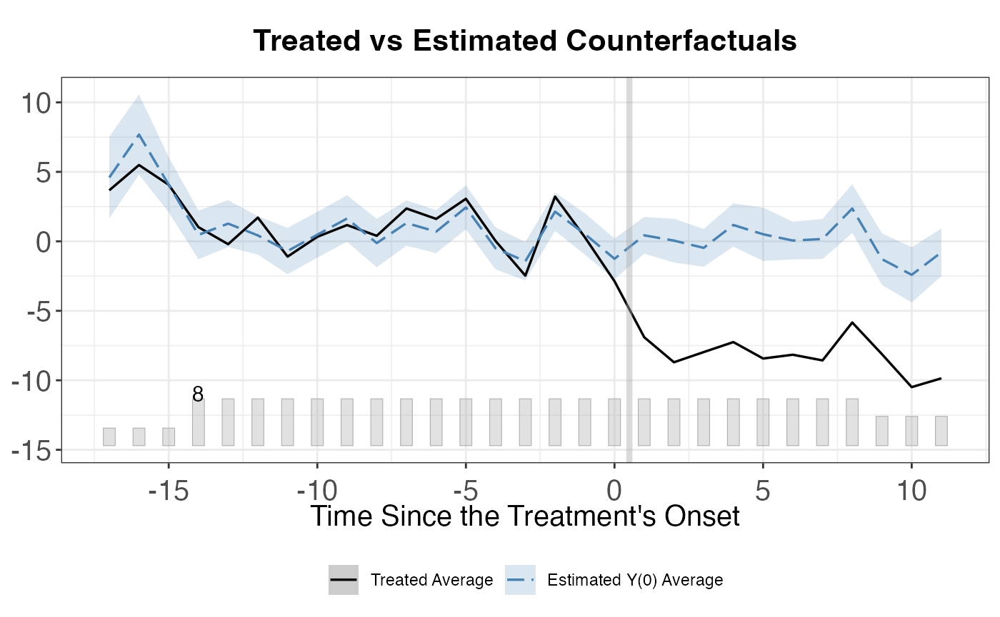
# Average over all treated units
plot(out_multi, type = "gap")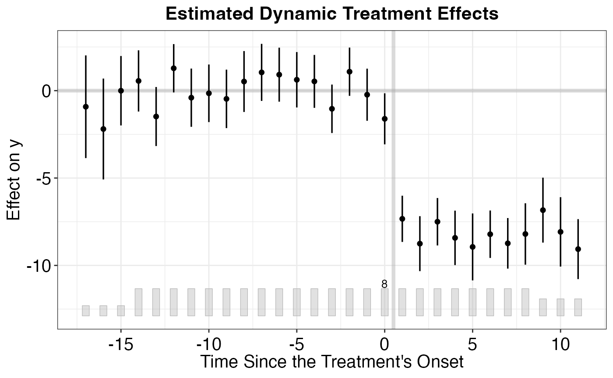
The number of latent factors is a critical tuning parameter. Too few factors may miss important confounders; too many may overfit. The gsynth package offers cross-validation (CV = TRUE) to select automatically:
# Explicitly set the number of factors (using gsynth_panel from earlier)
out_r2 <- gsynth(
y ~ treated + x1,
data = gsynth_panel,
index = c("unit_id", "year"),
force = "two-way",
r = 2, # Fix at 2 factors
se = TRUE,
nboots = 500
)
#> Parallel computing ...
#> Cross-validating ...
#> Criterion: Mean Squared Prediction Error
#> Interactive fixed effects model...
#> Cross-validating ...
#> r = 2; sigma2 = 10.08147; IC = 3.97823; PC = 44.54850; MSPE = 6.51745
#>
#> r* = 2
#>
#> Parametric Bootstrap
#> Simulating errors ...
#> Warning: UNRELIABLE VALUE: One of the foreach() iterations ('doFuture-1')
#> unexpectedly generated random numbers without declaring so. There is a risk
#> that those random numbers are not statistically sound and the overall results
#> might be invalid. To fix this, use '%dorng%' from the 'doRNG' package instead
#> of '%dopar%'. This ensures that proper, parallel-safe random numbers are
#> produced. To disable this check, set option 'doFuture.rng.onMisuse' to
#> "ignore". [future 'doFuture-1' (89ecb9ce03cad0ed5b2a779ebd2cb818-17); on
#> 89ecb9ce03cad0ed5b2a779ebd2cb818@Mikes-MacBook-Air.local<4816>]
#> Warning: UNRELIABLE VALUE: One of the foreach() iterations ('doFuture-2')
#> unexpectedly generated random numbers without declaring so. There is a risk
#> that those random numbers are not statistically sound and the overall results
#> might be invalid. To fix this, use '%dorng%' from the 'doRNG' package instead
#> of '%dopar%'. This ensures that proper, parallel-safe random numbers are
#> produced. To disable this check, set option 'doFuture.rng.onMisuse' to
#> "ignore". [future 'doFuture-2' (89ecb9ce03cad0ed5b2a779ebd2cb818-18); on
#> 89ecb9ce03cad0ed5b2a779ebd2cb818@Mikes-MacBook-Air.local<4816>]
#> Warning: UNRELIABLE VALUE: One of the foreach() iterations ('doFuture-3')
#> unexpectedly generated random numbers without declaring so. There is a risk
#> that those random numbers are not statistically sound and the overall results
#> might be invalid. To fix this, use '%dorng%' from the 'doRNG' package instead
#> of '%dopar%'. This ensures that proper, parallel-safe random numbers are
#> produced. To disable this check, set option 'doFuture.rng.onMisuse' to
#> "ignore". [future 'doFuture-3' (89ecb9ce03cad0ed5b2a779ebd2cb818-19); on
#> 89ecb9ce03cad0ed5b2a779ebd2cb818@Mikes-MacBook-Air.local<4816>]
#> Warning: UNRELIABLE VALUE: One of the foreach() iterations ('doFuture-4')
#> unexpectedly generated random numbers without declaring so. There is a risk
#> that those random numbers are not statistically sound and the overall results
#> might be invalid. To fix this, use '%dorng%' from the 'doRNG' package instead
#> of '%dopar%'. This ensures that proper, parallel-safe random numbers are
#> produced. To disable this check, set option 'doFuture.rng.onMisuse' to
#> "ignore". [future 'doFuture-4' (89ecb9ce03cad0ed5b2a779ebd2cb818-20); on
#> 89ecb9ce03cad0ed5b2a779ebd2cb818@Mikes-MacBook-Air.local<4816>]
#> Warning: UNRELIABLE VALUE: One of the foreach() iterations ('doFuture-5')
#> unexpectedly generated random numbers without declaring so. There is a risk
#> that those random numbers are not statistically sound and the overall results
#> might be invalid. To fix this, use '%dorng%' from the 'doRNG' package instead
#> of '%dopar%'. This ensures that proper, parallel-safe random numbers are
#> produced. To disable this check, set option 'doFuture.rng.onMisuse' to
#> "ignore". [future 'doFuture-5' (89ecb9ce03cad0ed5b2a779ebd2cb818-21); on
#> 89ecb9ce03cad0ed5b2a779ebd2cb818@Mikes-MacBook-Air.local<4816>]
#> Warning: UNRELIABLE VALUE: One of the foreach() iterations ('doFuture-6')
#> unexpectedly generated random numbers without declaring so. There is a risk
#> that those random numbers are not statistically sound and the overall results
#> might be invalid. To fix this, use '%dorng%' from the 'doRNG' package instead
#> of '%dopar%'. This ensures that proper, parallel-safe random numbers are
#> produced. To disable this check, set option 'doFuture.rng.onMisuse' to
#> "ignore". [future 'doFuture-6' (89ecb9ce03cad0ed5b2a779ebd2cb818-22); on
#> 89ecb9ce03cad0ed5b2a779ebd2cb818@Mikes-MacBook-Air.local<4816>]
#> Warning: UNRELIABLE VALUE: One of the foreach() iterations ('doFuture-7')
#> unexpectedly generated random numbers without declaring so. There is a risk
#> that those random numbers are not statistically sound and the overall results
#> might be invalid. To fix this, use '%dorng%' from the 'doRNG' package instead
#> of '%dopar%'. This ensures that proper, parallel-safe random numbers are
#> produced. To disable this check, set option 'doFuture.rng.onMisuse' to
#> "ignore". [future 'doFuture-7' (89ecb9ce03cad0ed5b2a779ebd2cb818-23); on
#> 89ecb9ce03cad0ed5b2a779ebd2cb818@Mikes-MacBook-Air.local<4816>]
#> Warning: UNRELIABLE VALUE: One of the foreach() iterations ('doFuture-8')
#> unexpectedly generated random numbers without declaring so. There is a risk
#> that those random numbers are not statistically sound and the overall results
#> might be invalid. To fix this, use '%dorng%' from the 'doRNG' package instead
#> of '%dopar%'. This ensures that proper, parallel-safe random numbers are
#> produced. To disable this check, set option 'doFuture.rng.onMisuse' to
#> "ignore". [future 'doFuture-8' (89ecb9ce03cad0ed5b2a779ebd2cb818-24); on
#> 89ecb9ce03cad0ed5b2a779ebd2cb818@Mikes-MacBook-Air.local<4816>]
#> Warning: UNRELIABLE VALUE: One of the foreach() iterations ('doFuture-1')
#> unexpectedly generated random numbers without declaring so. There is a risk
#> that those random numbers are not statistically sound and the overall results
#> might be invalid. To fix this, use '%dorng%' from the 'doRNG' package instead
#> of '%dopar%'. This ensures that proper, parallel-safe random numbers are
#> produced. To disable this check, set option 'doFuture.rng.onMisuse' to
#> "ignore". [future 'doFuture-1' (89ecb9ce03cad0ed5b2a779ebd2cb818-25); on
#> 89ecb9ce03cad0ed5b2a779ebd2cb818@Mikes-MacBook-Air.local<4816>]
#> Warning: UNRELIABLE VALUE: One of the foreach() iterations ('doFuture-2')
#> unexpectedly generated random numbers without declaring so. There is a risk
#> that those random numbers are not statistically sound and the overall results
#> might be invalid. To fix this, use '%dorng%' from the 'doRNG' package instead
#> of '%dopar%'. This ensures that proper, parallel-safe random numbers are
#> produced. To disable this check, set option 'doFuture.rng.onMisuse' to
#> "ignore". [future 'doFuture-2' (89ecb9ce03cad0ed5b2a779ebd2cb818-26); on
#> 89ecb9ce03cad0ed5b2a779ebd2cb818@Mikes-MacBook-Air.local<4816>]
#> Warning: UNRELIABLE VALUE: One of the foreach() iterations ('doFuture-3')
#> unexpectedly generated random numbers without declaring so. There is a risk
#> that those random numbers are not statistically sound and the overall results
#> might be invalid. To fix this, use '%dorng%' from the 'doRNG' package instead
#> of '%dopar%'. This ensures that proper, parallel-safe random numbers are
#> produced. To disable this check, set option 'doFuture.rng.onMisuse' to
#> "ignore". [future 'doFuture-3' (89ecb9ce03cad0ed5b2a779ebd2cb818-27); on
#> 89ecb9ce03cad0ed5b2a779ebd2cb818@Mikes-MacBook-Air.local<4816>]
#> Warning: UNRELIABLE VALUE: One of the foreach() iterations ('doFuture-4')
#> unexpectedly generated random numbers without declaring so. There is a risk
#> that those random numbers are not statistically sound and the overall results
#> might be invalid. To fix this, use '%dorng%' from the 'doRNG' package instead
#> of '%dopar%'. This ensures that proper, parallel-safe random numbers are
#> produced. To disable this check, set option 'doFuture.rng.onMisuse' to
#> "ignore". [future 'doFuture-4' (89ecb9ce03cad0ed5b2a779ebd2cb818-28); on
#> 89ecb9ce03cad0ed5b2a779ebd2cb818@Mikes-MacBook-Air.local<4816>]
#> Warning: UNRELIABLE VALUE: One of the foreach() iterations ('doFuture-5')
#> unexpectedly generated random numbers without declaring so. There is a risk
#> that those random numbers are not statistically sound and the overall results
#> might be invalid. To fix this, use '%dorng%' from the 'doRNG' package instead
#> of '%dopar%'. This ensures that proper, parallel-safe random numbers are
#> produced. To disable this check, set option 'doFuture.rng.onMisuse' to
#> "ignore". [future 'doFuture-5' (89ecb9ce03cad0ed5b2a779ebd2cb818-29); on
#> 89ecb9ce03cad0ed5b2a779ebd2cb818@Mikes-MacBook-Air.local<4816>]
#> Warning: UNRELIABLE VALUE: One of the foreach() iterations ('doFuture-6')
#> unexpectedly generated random numbers without declaring so. There is a risk
#> that those random numbers are not statistically sound and the overall results
#> might be invalid. To fix this, use '%dorng%' from the 'doRNG' package instead
#> of '%dopar%'. This ensures that proper, parallel-safe random numbers are
#> produced. To disable this check, set option 'doFuture.rng.onMisuse' to
#> "ignore". [future 'doFuture-6' (89ecb9ce03cad0ed5b2a779ebd2cb818-30); on
#> 89ecb9ce03cad0ed5b2a779ebd2cb818@Mikes-MacBook-Air.local<4816>]
#> Warning: UNRELIABLE VALUE: One of the foreach() iterations ('doFuture-7')
#> unexpectedly generated random numbers without declaring so. There is a risk
#> that those random numbers are not statistically sound and the overall results
#> might be invalid. To fix this, use '%dorng%' from the 'doRNG' package instead
#> of '%dopar%'. This ensures that proper, parallel-safe random numbers are
#> produced. To disable this check, set option 'doFuture.rng.onMisuse' to
#> "ignore". [future 'doFuture-7' (89ecb9ce03cad0ed5b2a779ebd2cb818-31); on
#> 89ecb9ce03cad0ed5b2a779ebd2cb818@Mikes-MacBook-Air.local<4816>]
#> Warning: UNRELIABLE VALUE: One of the foreach() iterations ('doFuture-8')
#> unexpectedly generated random numbers without declaring so. There is a risk
#> that those random numbers are not statistically sound and the overall results
#> might be invalid. To fix this, use '%dorng%' from the 'doRNG' package instead
#> of '%dopar%'. This ensures that proper, parallel-safe random numbers are
#> produced. To disable this check, set option 'doFuture.rng.onMisuse' to
#> "ignore". [future 'doFuture-8' (89ecb9ce03cad0ed5b2a779ebd2cb818-32); on
#> 89ecb9ce03cad0ed5b2a779ebd2cb818@Mikes-MacBook-Air.local<4816>]
#> Can't calculate the F statistic because of insufficient treated units.
# Compare with cross-validated selection
out_cv <- gsynth(
y ~ treated + x1,
data = gsynth_panel,
index = c("unit_id", "year"),
force = "two-way",
CV = TRUE,
r = c(0, 5), # Search over 0 to 5 factors
se = TRUE,
nboots = 500
)
#> Parallel computing ...
#> Cross-validating ...
#> Criterion: Mean Squared Prediction Error
#> Interactive fixed effects model...
#> Cross-validating ...
#> r = 0; sigma2 = 11.72379; IC = 3.05421; PC = 10.58324; MSPE = 7.28662
#> r = 1; sigma2 = 10.68348; IC = 3.51254; PC = 28.40224; MSPE = 7.17022
#> r = 2; sigma2 = 10.08147; IC = 3.97823; PC = 44.54850; MSPE = 6.51745
#> *
#> r = 3; sigma2 = 9.33589; IC = 4.39752; PC = 57.73039; MSPE = 7.41259
#> r = 4; sigma2 = 8.54997; IC = 4.77814; PC = 67.99859; MSPE = 8.80071
#> r = 5; sigma2 = 7.63475; IC = 5.10593; PC = 74.26306; MSPE = 9.12399
#>
#> r* = 2
#>
#> Parametric Bootstrap
#> Simulating errors ...
#> Warning: UNRELIABLE VALUE: One of the foreach() iterations ('doFuture-1')
#> unexpectedly generated random numbers without declaring so. There is a risk
#> that those random numbers are not statistically sound and the overall results
#> might be invalid. To fix this, use '%dorng%' from the 'doRNG' package instead
#> of '%dopar%'. This ensures that proper, parallel-safe random numbers are
#> produced. To disable this check, set option 'doFuture.rng.onMisuse' to
#> "ignore". [future 'doFuture-1' (89ecb9ce03cad0ed5b2a779ebd2cb818-33); on
#> 89ecb9ce03cad0ed5b2a779ebd2cb818@Mikes-MacBook-Air.local<4816>]
#> Warning: UNRELIABLE VALUE: One of the foreach() iterations ('doFuture-2')
#> unexpectedly generated random numbers without declaring so. There is a risk
#> that those random numbers are not statistically sound and the overall results
#> might be invalid. To fix this, use '%dorng%' from the 'doRNG' package instead
#> of '%dopar%'. This ensures that proper, parallel-safe random numbers are
#> produced. To disable this check, set option 'doFuture.rng.onMisuse' to
#> "ignore". [future 'doFuture-2' (89ecb9ce03cad0ed5b2a779ebd2cb818-34); on
#> 89ecb9ce03cad0ed5b2a779ebd2cb818@Mikes-MacBook-Air.local<4816>]
#> Warning: UNRELIABLE VALUE: One of the foreach() iterations ('doFuture-3')
#> unexpectedly generated random numbers without declaring so. There is a risk
#> that those random numbers are not statistically sound and the overall results
#> might be invalid. To fix this, use '%dorng%' from the 'doRNG' package instead
#> of '%dopar%'. This ensures that proper, parallel-safe random numbers are
#> produced. To disable this check, set option 'doFuture.rng.onMisuse' to
#> "ignore". [future 'doFuture-3' (89ecb9ce03cad0ed5b2a779ebd2cb818-35); on
#> 89ecb9ce03cad0ed5b2a779ebd2cb818@Mikes-MacBook-Air.local<4816>]
#> Warning: UNRELIABLE VALUE: One of the foreach() iterations ('doFuture-4')
#> unexpectedly generated random numbers without declaring so. There is a risk
#> that those random numbers are not statistically sound and the overall results
#> might be invalid. To fix this, use '%dorng%' from the 'doRNG' package instead
#> of '%dopar%'. This ensures that proper, parallel-safe random numbers are
#> produced. To disable this check, set option 'doFuture.rng.onMisuse' to
#> "ignore". [future 'doFuture-4' (89ecb9ce03cad0ed5b2a779ebd2cb818-36); on
#> 89ecb9ce03cad0ed5b2a779ebd2cb818@Mikes-MacBook-Air.local<4816>]
#> Warning: UNRELIABLE VALUE: One of the foreach() iterations ('doFuture-5')
#> unexpectedly generated random numbers without declaring so. There is a risk
#> that those random numbers are not statistically sound and the overall results
#> might be invalid. To fix this, use '%dorng%' from the 'doRNG' package instead
#> of '%dopar%'. This ensures that proper, parallel-safe random numbers are
#> produced. To disable this check, set option 'doFuture.rng.onMisuse' to
#> "ignore". [future 'doFuture-5' (89ecb9ce03cad0ed5b2a779ebd2cb818-37); on
#> 89ecb9ce03cad0ed5b2a779ebd2cb818@Mikes-MacBook-Air.local<4816>]
#> Warning: UNRELIABLE VALUE: One of the foreach() iterations ('doFuture-6')
#> unexpectedly generated random numbers without declaring so. There is a risk
#> that those random numbers are not statistically sound and the overall results
#> might be invalid. To fix this, use '%dorng%' from the 'doRNG' package instead
#> of '%dopar%'. This ensures that proper, parallel-safe random numbers are
#> produced. To disable this check, set option 'doFuture.rng.onMisuse' to
#> "ignore". [future 'doFuture-6' (89ecb9ce03cad0ed5b2a779ebd2cb818-38); on
#> 89ecb9ce03cad0ed5b2a779ebd2cb818@Mikes-MacBook-Air.local<4816>]
#> Warning: UNRELIABLE VALUE: One of the foreach() iterations ('doFuture-7')
#> unexpectedly generated random numbers without declaring so. There is a risk
#> that those random numbers are not statistically sound and the overall results
#> might be invalid. To fix this, use '%dorng%' from the 'doRNG' package instead
#> of '%dopar%'. This ensures that proper, parallel-safe random numbers are
#> produced. To disable this check, set option 'doFuture.rng.onMisuse' to
#> "ignore". [future 'doFuture-7' (89ecb9ce03cad0ed5b2a779ebd2cb818-39); on
#> 89ecb9ce03cad0ed5b2a779ebd2cb818@Mikes-MacBook-Air.local<4816>]
#> Warning: UNRELIABLE VALUE: One of the foreach() iterations ('doFuture-8')
#> unexpectedly generated random numbers without declaring so. There is a risk
#> that those random numbers are not statistically sound and the overall results
#> might be invalid. To fix this, use '%dorng%' from the 'doRNG' package instead
#> of '%dopar%'. This ensures that proper, parallel-safe random numbers are
#> produced. To disable this check, set option 'doFuture.rng.onMisuse' to
#> "ignore". [future 'doFuture-8' (89ecb9ce03cad0ed5b2a779ebd2cb818-40); on
#> 89ecb9ce03cad0ed5b2a779ebd2cb818@Mikes-MacBook-Air.local<4816>]
#> Warning: UNRELIABLE VALUE: One of the foreach() iterations ('doFuture-1')
#> unexpectedly generated random numbers without declaring so. There is a risk
#> that those random numbers are not statistically sound and the overall results
#> might be invalid. To fix this, use '%dorng%' from the 'doRNG' package instead
#> of '%dopar%'. This ensures that proper, parallel-safe random numbers are
#> produced. To disable this check, set option 'doFuture.rng.onMisuse' to
#> "ignore". [future 'doFuture-1' (89ecb9ce03cad0ed5b2a779ebd2cb818-41); on
#> 89ecb9ce03cad0ed5b2a779ebd2cb818@Mikes-MacBook-Air.local<4816>]
#> Warning: UNRELIABLE VALUE: One of the foreach() iterations ('doFuture-2')
#> unexpectedly generated random numbers without declaring so. There is a risk
#> that those random numbers are not statistically sound and the overall results
#> might be invalid. To fix this, use '%dorng%' from the 'doRNG' package instead
#> of '%dopar%'. This ensures that proper, parallel-safe random numbers are
#> produced. To disable this check, set option 'doFuture.rng.onMisuse' to
#> "ignore". [future 'doFuture-2' (89ecb9ce03cad0ed5b2a779ebd2cb818-42); on
#> 89ecb9ce03cad0ed5b2a779ebd2cb818@Mikes-MacBook-Air.local<4816>]
#> Warning: UNRELIABLE VALUE: One of the foreach() iterations ('doFuture-3')
#> unexpectedly generated random numbers without declaring so. There is a risk
#> that those random numbers are not statistically sound and the overall results
#> might be invalid. To fix this, use '%dorng%' from the 'doRNG' package instead
#> of '%dopar%'. This ensures that proper, parallel-safe random numbers are
#> produced. To disable this check, set option 'doFuture.rng.onMisuse' to
#> "ignore". [future 'doFuture-3' (89ecb9ce03cad0ed5b2a779ebd2cb818-43); on
#> 89ecb9ce03cad0ed5b2a779ebd2cb818@Mikes-MacBook-Air.local<4816>]
#> Warning: UNRELIABLE VALUE: One of the foreach() iterations ('doFuture-4')
#> unexpectedly generated random numbers without declaring so. There is a risk
#> that those random numbers are not statistically sound and the overall results
#> might be invalid. To fix this, use '%dorng%' from the 'doRNG' package instead
#> of '%dopar%'. This ensures that proper, parallel-safe random numbers are
#> produced. To disable this check, set option 'doFuture.rng.onMisuse' to
#> "ignore". [future 'doFuture-4' (89ecb9ce03cad0ed5b2a779ebd2cb818-44); on
#> 89ecb9ce03cad0ed5b2a779ebd2cb818@Mikes-MacBook-Air.local<4816>]
#> Warning: UNRELIABLE VALUE: One of the foreach() iterations ('doFuture-5')
#> unexpectedly generated random numbers without declaring so. There is a risk
#> that those random numbers are not statistically sound and the overall results
#> might be invalid. To fix this, use '%dorng%' from the 'doRNG' package instead
#> of '%dopar%'. This ensures that proper, parallel-safe random numbers are
#> produced. To disable this check, set option 'doFuture.rng.onMisuse' to
#> "ignore". [future 'doFuture-5' (89ecb9ce03cad0ed5b2a779ebd2cb818-45); on
#> 89ecb9ce03cad0ed5b2a779ebd2cb818@Mikes-MacBook-Air.local<4816>]
#> Warning: UNRELIABLE VALUE: One of the foreach() iterations ('doFuture-6')
#> unexpectedly generated random numbers without declaring so. There is a risk
#> that those random numbers are not statistically sound and the overall results
#> might be invalid. To fix this, use '%dorng%' from the 'doRNG' package instead
#> of '%dopar%'. This ensures that proper, parallel-safe random numbers are
#> produced. To disable this check, set option 'doFuture.rng.onMisuse' to
#> "ignore". [future 'doFuture-6' (89ecb9ce03cad0ed5b2a779ebd2cb818-46); on
#> 89ecb9ce03cad0ed5b2a779ebd2cb818@Mikes-MacBook-Air.local<4816>]
#> Warning: UNRELIABLE VALUE: One of the foreach() iterations ('doFuture-7')
#> unexpectedly generated random numbers without declaring so. There is a risk
#> that those random numbers are not statistically sound and the overall results
#> might be invalid. To fix this, use '%dorng%' from the 'doRNG' package instead
#> of '%dopar%'. This ensures that proper, parallel-safe random numbers are
#> produced. To disable this check, set option 'doFuture.rng.onMisuse' to
#> "ignore". [future 'doFuture-7' (89ecb9ce03cad0ed5b2a779ebd2cb818-47); on
#> 89ecb9ce03cad0ed5b2a779ebd2cb818@Mikes-MacBook-Air.local<4816>]
#> Warning: UNRELIABLE VALUE: One of the foreach() iterations ('doFuture-8')
#> unexpectedly generated random numbers without declaring so. There is a risk
#> that those random numbers are not statistically sound and the overall results
#> might be invalid. To fix this, use '%dorng%' from the 'doRNG' package instead
#> of '%dopar%'. This ensures that proper, parallel-safe random numbers are
#> produced. To disable this check, set option 'doFuture.rng.onMisuse' to
#> "ignore". [future 'doFuture-8' (89ecb9ce03cad0ed5b2a779ebd2cb818-48); on
#> 89ecb9ce03cad0ed5b2a779ebd2cb818@Mikes-MacBook-Air.local<4816>]
#> Can't calculate the F statistic because of insufficient treated units.
cat("Cross-validated number of factors:", out_cv$r.cv, "\n")
#> Cross-validated number of factors: 2Placebo tests are the primary tool for assessing the credibility of synthetic control estimates. Because formal statistical inference is challenging with a single treated unit, the research community relies heavily on these falsification checks.
In-space placebo tests (also called “leave-one-out” or “permutation” tests) apply the SC method to each control unit as if it were the treated unit. The idea is: if the treatment truly had an effect, the gap for the treated unit should be unusually large compared to the gaps for the placebo units.
The procedure:
A common metric is the ratio of post-treatment MSPE to pre-treatment MSPE. If the treated unit’s ratio is extreme (e.g., in the top 5% of the distribution), this provides evidence that the treatment had a genuine effect.
# In-space placebo using synthdid on California Prop 99
setup <- synthdid::panel.matrices(synthdid::california_prop99)
# Store gaps for all units
N <- nrow(setup$Y)
T_total <- ncol(setup$Y)
all_gaps <- matrix(NA, nrow = N, ncol = T_total)
for (i in 1:N) {
# Rearrange: put unit i as the last row (treated)
idx <- c(setdiff(1:N, i), i)
Y_perm <- setup$Y[idx, ]
N0_perm <- N - 1
tryCatch({
est_perm <- synthdid::sc_estimate(Y_perm, N0_perm, setup$T0)
weights_perm <- attr(est_perm, 'weights')
# Compute gap as treated minus synthetic
omega_perm <- c(weights_perm$omega, rep(0, 1))
omega_target <- c(rep(0, N0_perm), 1)
obs_traj <- as.numeric(omega_target %*% Y_perm)
syn_traj <- as.numeric(c(weights_perm$omega, 0) %*% Y_perm)
all_gaps[i, ] <- obs_traj - syn_traj
}, error = function(e) {
# Some permutations may fail; skip them
})
}
# Plot all placebo gaps
years <- as.numeric(colnames(setup$Y))
matplot(years, t(all_gaps[-N, ]), type = "l", col = "grey80", lty = 1,
xlab = "Year", ylab = "Gap in Cigarette Sales",
main = "In-Space Placebo Test: California Prop 99")
# Add the actual treated unit (California) in bold
lines(years, all_gaps[N, ], col = "black", lwd = 2)
abline(v = years[setup$T0] + 0.5, lty = 2, col = "red")
abline(h = 0, lty = 2, col = "gray50")
legend("bottomleft", legend = c("California", "Placebos"),
col = c("black", "grey80"), lwd = c(2, 1), bty = "n")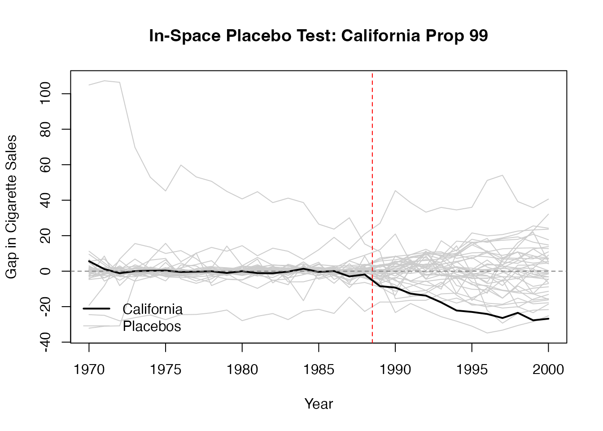
In-time placebo tests (also called “backdating” tests) reassign the treatment date to an earlier period and check whether the SC method finds a spurious treatment effect where none should exist.
The procedure:
# In-time placebo: backdate treatment to 1983 (5 years before actual treatment)
# Re-create setup to ensure it is available
setup <- synthdid::panel.matrices(synthdid::california_prop99)
placebo_T0 <- which(colnames(setup$Y) == "1983")
# Use only pre-treatment data
Y_placebo <- setup$Y[, 1:setup$T0]
T0_placebo <- placebo_T0
tau_placebo <- synthdid::sc_estimate(Y_placebo, setup$N0, T0_placebo)
summary(tau_placebo)
#> $estimate
#> [1] -3.69429
#>
#> $se
#> [,1]
#> [1,] NA
#>
#> $controls
#> estimate 1
#> Utah 0.397
#> Connecticut 0.290
#> Nevada 0.275
#>
#> $periods
#> estimate 1
#> 1983 0
#> 1982 0
#> 1981 0
#> 1980 0
#> 1979 0
#> 1978 0
#> 1977 0
#> 1976 0
#> 1975 0
#> 1974 0
#> 1973 0
#> 1972 0
#> 1971 0
#> 1970 0
#>
#> $dimensions
#> N1 N0 N0.effective T1 T0 T0.effective
#> 1.000 38.000 3.143 5.000 14.000 InfBefore examining post-treatment effects, always assess the quality of the pre-treatment fit. A synthetic control that poorly matches the treated unit before treatment cannot be trusted to provide a valid counterfactual after treatment.
Key diagnostics:
Synth package).
# Pre-treatment fit visualization
sc_est_full <- synthdid::sc_estimate(setup$Y, setup$N0, setup$T0)
sc_w <- attr(sc_est_full, 'weights')
# Treated trajectory
treated_traj <- setup$Y[nrow(setup$Y), ]
# Synthetic control trajectory
synth_traj <- as.numeric(sc_w$omega %*% setup$Y[1:setup$N0, ])
fit_df <- data.frame(
Year = years,
Treated = treated_traj,
Synthetic = synth_traj,
Period = ifelse(years <= years[setup$T0], "Pre-treatment", "Post-treatment")
)
ggplot(fit_df, aes(x = Year)) +
geom_line(aes(y = Treated, color = "California"), linewidth = 0.8) +
geom_line(aes(y = Synthetic, color = "Synthetic California"),
linewidth = 0.8, linetype = "dashed") +
geom_vline(xintercept = years[setup$T0] + 0.5, linetype = "dashed", color = "gray50") +
scale_color_manual(values = c("California" = "black", "Synthetic California" = "red")) +
labs(
title = "Pre-treatment Fit: California vs. Synthetic California",
x = "Year",
y = "Per-capita Cigarette Sales (packs)",
color = NULL
) +
ama_theme()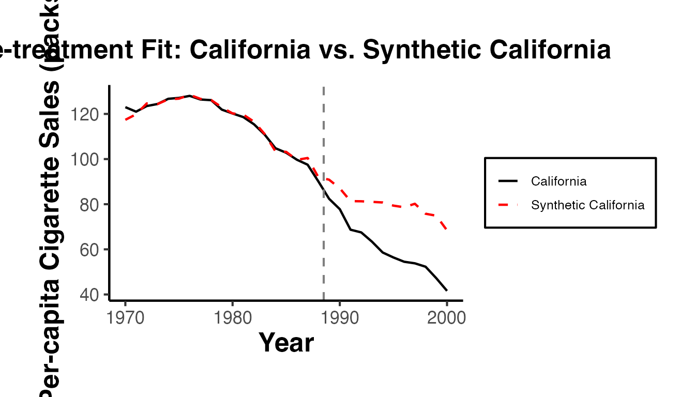
# Compute pre-treatment MSPE
pre_gap <- treated_traj[1:setup$T0] - synth_traj[1:setup$T0]
pre_mspe <- mean(pre_gap^2)
cat("Pre-treatment MSPE:", round(pre_mspe, 4), "\n")
#> Pre-treatment MSPE: 2.7717
cat("Pre-treatment RMSE:", round(sqrt(pre_mspe), 4), "\n")
#> Pre-treatment RMSE: 1.6648Good pre-treatment fit is a necessary (though not sufficient) condition for a credible SC estimate. This section covers visualization techniques for assessing pre-trends.
Gap plots show the difference between the treated unit and its synthetic control over time. In the pre-treatment period, the gap should fluctuate around zero. In the post-treatment period, a systematic departure from zero indicates a treatment effect.
gap <- treated_traj - synth_traj
gap_plot_df <- data.frame(Year = years, Gap = gap)
ggplot(gap_plot_df, aes(x = Year, y = Gap)) +
geom_line(linewidth = 0.8) +
geom_point(size = 1.5) +
geom_hline(yintercept = 0, linetype = "dashed", color = "gray50") +
geom_vline(xintercept = years[setup$T0] + 0.5, linetype = "dashed", color = "red") +
annotate("text", x = years[setup$T0] + 1, y = max(gap) * 0.9,
label = "Treatment", hjust = 0, color = "red", size = 3) +
labs(
title = "Gap Plot: California Proposition 99",
x = "Year",
y = "Gap (California - Synthetic California)"
) +
ama_theme()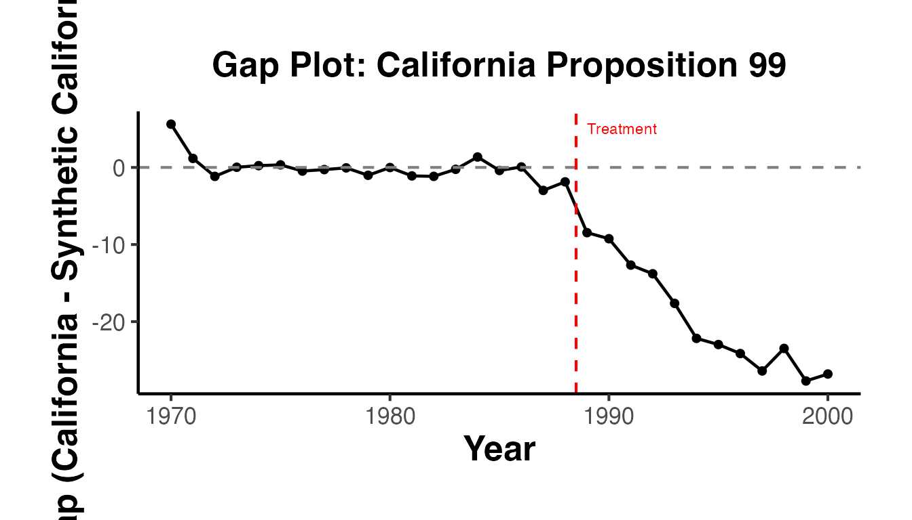
Path plots overlay the treated and synthetic control trajectories. They are the most common visualization in SC applications.
path_long <- tidyr::pivot_longer(
fit_df, cols = c("Treated", "Synthetic"),
names_to = "Unit", values_to = "Outcome"
)
ggplot(path_long, aes(x = Year, y = Outcome, color = Unit, linetype = Unit)) +
geom_line(linewidth = 0.8) +
geom_vline(xintercept = years[setup$T0] + 0.5, linetype = "dashed", color = "gray50") +
scale_color_manual(values = c("Treated" = "black", "Synthetic" = "red")) +
scale_linetype_manual(values = c("Treated" = "solid", "Synthetic" = "dashed")) +
labs(
title = "Path Plot: Treated vs. Synthetic Control",
x = "Year",
y = "Per-capita Cigarette Sales (packs)",
color = NULL, linetype = NULL
) +
ama_theme()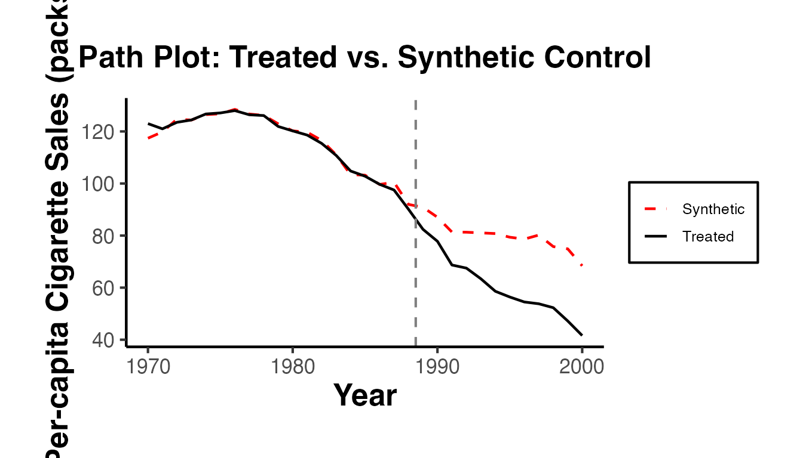
The ratio of post-treatment MSPE to pre-treatment MSPE provides a scale-free measure of the treatment effect that accounts for pre-treatment fit quality:
post_gap <- treated_traj[(setup$T0 + 1):length(treated_traj)] -
synth_traj[(setup$T0 + 1):length(synth_traj)]
post_mspe <- mean(post_gap^2)
mspe_ratio <- post_mspe / pre_mspe
cat("Post-treatment MSPE:", round(post_mspe, 4), "\n")
#> Post-treatment MSPE: 429.4404
cat("Pre-treatment MSPE:", round(pre_mspe, 4), "\n")
#> Pre-treatment MSPE: 2.7717
cat("MSPE Ratio (post/pre):", round(mspe_ratio, 2), "\n")
#> MSPE Ratio (post/pre): 154.94A high MSPE ratio for the treated unit, combined with a low MSPE ratio for placebo units, provides strong evidence of a treatment effect. The p-value is calculated as the fraction of units (including the treated unit) whose MSPE ratio is at least as large as the treated unit’s.
The choice among SC, SynthDID, and DID depends on the empirical setting:
Use Standard SC when:
Use SynthDID when:
Use Standard DID when:
Use Augmented SC (augsynth) when:
Use Generalized SC (gsynth) when:
The choice of donor pool is critical for SC:
More pre-treatment periods generally improve the SC estimate by providing more data for weight estimation. Abadie, Diamond, and Hainmueller (2010) show that with a sufficiently long pre-treatment period, SC can control for time-varying unobserved confounders.
As a rule of thumb:
When presenting SC results in a research paper, include:
tidysynth
The tidysynth package provides a pipe-friendly, tidy interface to the synthetic control method. Instead of manually preparing matrices and calling separate estimation functions, you build the entire SCM workflow through a sequence of piped operations. This makes the code more readable and aligns with the tidyverse philosophy.
The key functions are:
synthetic_control(): Initialize the SC object from a data frame.generate_predictor(): Specify predictor variables for the pre-treatment matching.generate_weights(): Solve for optimal donor weights.generate_control(): Construct the synthetic control unit.grab_significance(): Extract placebo-based inference results (p-values from in-space placebos).
library(tidysynth)
# Simulate panel data
set.seed(42)
n_units_ts <- 12
years_ts <- 1980:2005
treat_year_ts <- 1995
ts_panel <- expand.grid(
year = years_ts,
unit_id = 1:n_units_ts
)
unit_fe <- rnorm(n_units_ts, mean = 50, sd = 8)
time_fe <- seq(-2, 2, length.out = length(years_ts))
ts_panel$outcome <- unit_fe[ts_panel$unit_id] +
time_fe[match(ts_panel$year, years_ts)] +
rnorm(nrow(ts_panel), sd = 1.5)
ts_panel$predictor1 <- rnorm(nrow(ts_panel), mean = 200, sd = 40)
ts_panel$predictor2 <- rnorm(nrow(ts_panel), mean = 10, sd = 3)
# Unit 1 is treated after 1995: true effect = -10
ts_panel$outcome[ts_panel$unit_id == 1 & ts_panel$year >= treat_year_ts] <-
ts_panel$outcome[ts_panel$unit_id == 1 & ts_panel$year >= treat_year_ts] - 10
ts_panel$unit_name <- paste0("Unit_", ts_panel$unit_id)
ts_panel$treated_unit <- ifelse(ts_panel$unit_id == 1, 1, 0)
# Tidy SCM pipeline
ts_out <- ts_panel |>
synthetic_control(
outcome = outcome,
unit = unit_name,
time = year,
i_unit = "Unit_1",
i_time = treat_year_ts,
generate_placebos = TRUE
) |>
generate_predictor(
time_window = 1980:1994,
predictor1 = mean(predictor1, na.rm = TRUE),
predictor2 = mean(predictor2, na.rm = TRUE)
) |>
generate_predictor(
time_window = 1980:1994,
outcome = mean(outcome, na.rm = TRUE)
) |>
generate_weights(optimization_window = 1980:1994) |>
generate_control()
# Plot trends: treated vs synthetic
ts_out |> plot_trends() +
causalverse::ama_theme() +
labs(title = "tidysynth: Treated vs. Synthetic Control")
# Plot treatment effect (gap)
ts_out |> plot_differences() +
causalverse::ama_theme() +
labs(title = "tidysynth: Treatment Effect (Gap)")
# Significance via in-space placebos
ts_out |> grab_significance()pensynth
Abadie and L’Hour (2021) propose the penalized synthetic control estimator, which adds a penalty on the pairwise discrepancies between the treated unit and donor units. By introducing a penalty parameter , the method interpolates between exact matching () and the standard SC solution (). This avoids the well-known issue of SCM assigning zero weight to close-but-not-chosen donors.
The pensynth package implements this estimator via pensynth(), which accepts a matrix of treated-unit values, a matrix of donor-unit values, and the penalty parameter lambda.
library(pensynth)
# Simulate pre-treatment outcome matrices
set.seed(42)
n_donors_ps <- 10
n_pre_ps <- 15
# Treated unit pre-treatment outcomes (vector)
X1 <- matrix(cumsum(rnorm(n_pre_ps, mean = 0.5, sd = 1)), ncol = 1)
# Donor units pre-treatment outcomes (matrix: T_pre x J)
X0 <- matrix(NA, nrow = n_pre_ps, ncol = n_donors_ps)
for (j in seq_len(n_donors_ps)) {
X0[, j] <- cumsum(rnorm(n_pre_ps, mean = 0.5, sd = 1)) + rnorm(1, sd = 3)
}
# Standard penalized SC (moderate lambda)
pen_fit <- pensynth(X1 = X1, X0 = X0, lambda = 1)
# Compare weights under different lambda values
pen_fit_low <- pensynth(X1 = X1, X0 = X0, lambda = 0.01)
pen_fit_high <- pensynth(X1 = X1, X0 = X0, lambda = 100)
# Visualize weight distributions
weights_df <- data.frame(
donor = rep(paste0("D", seq_len(n_donors_ps)), 3),
weight = c(pen_fit_low$w, pen_fit$w, pen_fit_high$w),
penalty = rep(c("lambda = 0.01", "lambda = 1", "lambda = 100"),
each = n_donors_ps)
)
ggplot(weights_df, aes(x = donor, y = weight, fill = penalty)) +
geom_col(position = "dodge") +
causalverse::ama_theme() +
labs(
title = "Penalized SC: Weight Distribution Across Lambda Values",
x = "Donor Unit",
y = "Weight",
fill = "Penalty"
)As increases, the weights spread more evenly across donors that are individually close to the treated unit, reducing sensitivity to any single donor.
The SCtools package extends the classic Synth package with additional diagnostic and visualization tools for inference. Its key functions include:
generate.placebos(): Run in-space placebo tests by iteratively treating each donor as if it were the treated unit.plot_placebos(): Visualize the gaps for the treated unit alongside all placebo gaps.mspe_test(): Compute the post/pre MSPE ratio for significance testing.multiple.synth(): Automate synthetic control estimation across multiple treated units or specifications.
library(Synth)
library(SCtools)
# Use a small simulated dataset for SCtools demonstration
set.seed(42)
n_units_sct <- 8
years_sct <- 1985:2005
treat_year_sct <- 1998
sct_panel <- expand.grid(year = years_sct, unit = 1:n_units_sct)
unit_fe_sct <- rnorm(n_units_sct, mean = 80, sd = 10)
time_fe_sct <- seq(-1, 1, length.out = length(years_sct))
sct_panel$outcome <- unit_fe_sct[sct_panel$unit] +
time_fe_sct[match(sct_panel$year, years_sct)] +
rnorm(nrow(sct_panel), sd = 1)
# True treatment effect for unit 1 after 1998
sct_panel$outcome[sct_panel$unit == 1 & sct_panel$year >= treat_year_sct] <-
sct_panel$outcome[sct_panel$unit == 1 & sct_panel$year >= treat_year_sct] - 8
# Prepare data for Synth
dataprep_out_sct <- dataprep(
foo = sct_panel,
predictors = "outcome",
predictors.op = "mean",
time.predictors.prior = 1985:1997,
dependent = "outcome",
unit.variable = "unit",
time.variable = "year",
treatment.identifier = 1,
controls.identifier = 2:n_units_sct,
time.optimize.ssr = 1985:1997,
time.plot = 1985:2005
)
synth_out_sct <- synth(dataprep_out_sct, verbose = FALSE)
# Generate placebos for all donor units
placebo_out <- generate.placebos(
dataprep.out = dataprep_out_sct,
synth.out = synth_out_sct,
Sigf.ipop = 3
)
# Plot placebo gaps
plot_placebos(placebo_out) +
causalverse::ama_theme() +
labs(title = "SCtools: In-Space Placebo Test")
# MSPE ratio test
mspe_test(placebo_out)microsynth
The microsynth package implements the synthetic control method for settings with many micro-level or meso-level units (e.g., census tracts, schools, or small geographic areas). Unlike the classic Synth approach designed for a single aggregate treated unit and a handful of donors, microsynth can handle large donor pools and provides permutation-based inference by default.
The main function microsynth() takes a data frame, a treatment variable, outcome variables, and time information, and performs the matching and estimation internally.
library(microsynth)
# Simulate micro-level panel data
set.seed(42)
n_micro <- 50
years_micro <- 2000:2015
treat_year_micro <- 2010
micro_panel <- expand.grid(
year = years_micro,
id = 1:n_micro
)
# Unit-level baseline plus time trend
micro_panel$outcome <- 20 + rnorm(n_micro, sd = 5)[micro_panel$id] +
0.3 * (micro_panel$year - 2000) +
rnorm(nrow(micro_panel), sd = 1)
# Covariate
micro_panel$covariate1 <- rnorm(nrow(micro_panel), mean = 50, sd = 10)
# Units 1-5 are treated after 2010; true effect = -4
treated_ids <- 1:5
micro_panel$treatment <- as.integer(
micro_panel$id %in% treated_ids & micro_panel$year >= treat_year_micro
)
micro_panel$outcome[micro_panel$treatment == 1] <-
micro_panel$outcome[micro_panel$treatment == 1] - 4
# Run microsynth with permutation inference
micro_fit <- microsynth(
data = as.data.frame(micro_panel),
idvar = "id",
timevar = "year",
intvar = "treatment",
start.pre = 2000,
end.pre = 2009,
end.post = 2015,
match.out = "outcome",
result.var = "outcome",
perm = 50,
jack = FALSE
)
summary(micro_fit)
plot_microsynth(micro_fit)| Function | Purpose | Key Features |
|---|---|---|
panel_estimate() |
Compare multiple estimators | Runs SC, SC Ridge, DID, SynthDID, DIFP, etc. on the same panel setup |
process_panel_estimate() |
Format results | Creates a clean table with Method, Estimate, SE |
get_balanced_panel() |
Data preparation | Extracts balanced panel for a specific adoption cohort |
synthdid_est() |
Single-cohort estimation | Per-period effects, jackknife SE, subgroup analysis |
synthdid_est_ate() |
Staggered adoption | Aggregates cohort-level ATTs, confidence intervals |
synthdid_est_per() |
Per-period effects | Decomposes overall ATT into period-specific effects |
synthdid_se_placebo() |
Placebo SE | Bootstrap-based inference for single treated unit |
synthdid_se_jacknife() |
Jackknife SE | Leave-one-out inference; falls back to placebo if needed |
synthdid_plot_ate() |
Visualization | ATE plot with confidence intervals |
Abadie, A., and Gardeazabal, J. (2003). “The Economic Costs of Conflict: A Case Study of the Basque Country.” American Economic Review, 93(1), 113-132.
Abadie, A., Diamond, A., and Hainmueller, J. (2010). “Synthetic Control Methods for Comparative Case Studies: Estimating the Effect of California’s Tobacco Control Program.” Journal of the American Statistical Association, 105(490), 493-505.
Abadie, A., Diamond, A., and Hainmueller, J. (2015). “Comparative Politics and the Synthetic Control Method.” American Journal of Political Science, 59(2), 495-510.
Doudchenko, N., and Imbens, G. W. (2016). “Balancing, Regression, Difference-in-Differences and Synthetic Control Methods: A Synthesis.” NBER Working Paper 22791.
Ferman, B., and Pinto, C. (2021). “Synthetic Controls with Imperfect Pretreatment Fit.” Quantitative Economics, 12(4), 1197-1221.
Abadie, A., Diamond, A., and Hainmueller, J. (2010). Permutation inference for synthetic control methods (included in the JASA paper above).
Firpo, S., and Possebom, V. (2018). “Synthetic Control Method: Inference, Sensitivity Analysis and Confidence Sets.” Journal of Causal Inference, 6(2).
Chernozhukov, V., Wuthrich, K., and Zhu, Y. (2021). “An Exact and Robust Conformal Inference Method for Counterfactual and Synthetic Controls.” Journal of the American Statistical Association, 116(536), 1849-1864.
Abadie, A., Diamond, A., and Hainmueller, J. (2011). “Synth: An R Package for Synthetic Control Methods in Comparative Case Studies.” Journal of Statistical Software, 42(13), 1-17.
Arkhangelsky, D., Athey, S., Hirshberg, D. A., Imbens, G. W., and Wager, S. (2021). synthdid: R package. https://github.com/synth-inference/synthdid.